Copilot 365 – Microsoft: Ο ψηφιακός βοηθός στη δουλειά σας
Ένα διαδραστικό μάθημα γνωριμίας με τον Microsoft Copilot: από τον browser και το περιβάλλον του, μέχρι τα σωστά prompts και τη συνεργασία του με το Word, το Excel και το PowerPoint — και στο τέλος, πώς συνεργάζονται μεταξύ τους όλα τα εργαλεία AI που γνωρίσατε.
Μαθησιακοί στόχοι
Να κατανοήσετε τι είναι ο Microsoft Copilot και πού θα τον συναντήσετε (browser και εφαρμογές Microsoft 365).
Να γνωρίσετε το περιβάλλον του: σημεία πρόσβασης, κύρια οθόνη, τρόπους απάντησης, είσοδο με λογαριασμό και ρυθμίσεις.
Να γράφετε σωστά prompts με σαφήνεια και ακρίβεια, εφαρμόζοντας τις βασικές αρχές.
Να δημιουργείτε και να επεξεργάζεστε έγγραφα στο Word με τη βοήθεια του Copilot.
Να δημιουργείτε πίνακες, υπολογισμούς και γραφήματα στο Excel βήμα προς βήμα.
Να χτίζετε παρουσιάσεις στο PowerPoint: διαφάνειες, σχεδίαση, σημειώσεις ομιλητή και περίληψη.
Να κατανοήσετε πώς συνεργάζονται μεταξύ τους το NotebookLM, το Gemini, το ChatGPT και ο Copilot σε μια ενιαία ροή εργασίας.
Εμπλουτισμένο υλικό · 6 αναλυτικές υποενότητες
Κάθε υποενότητα περιλαμβάνει εισαγωγή, αναλυτική εξήγηση με παραγράφους, μελέτη περίπτωσης και διαδραστική εφαρμογή. Μπορείτε να προχωράτε σε βήματα ή να επιλέξετε «Συνεχής ανάγνωση».
Οι διαθέσιμες λειτουργίες μπορεί να διαφέρουν ανά λογαριασμό, πρόγραμμα και πλατφόρμα.
Κεφάλαιο 1 · Εισαγωγή
Γνωριμία με το Copilot
Φανταστείτε να έχετε έναν ψηφιακό βοηθό, έτοιμο να απαντήσει στις ερωτήσεις σας, να σας προτείνει ιδέες, να οργανώσει τα έγγραφά σας ή ακόμα και να γράψει για εσάς. Αυτός ο ψηφιακός βοηθός είναι ο Microsoft Copilot. Ένα έξυπνο εργαλείο που ενσωματώνεται απευθείας στις εφαρμογές του Microsoft 365, όπως το Word, το Excel, το Outlook και το PowerPoint, και σας προσφέρει βοήθεια σε πραγματικό χρόνο με τη δύναμη της Τεχνητής Νοημοσύνης.
Θα δούμε πώς να τον εντοπίζετε στον υπολογιστή σας, πώς να του «μιλάτε» μέσω των prompts και πώς να αξιοποιείτε τις δυνατότητές του για να εξοικονομείτε χρόνο και να εργάζεστε πιο αποτελεσματικά.
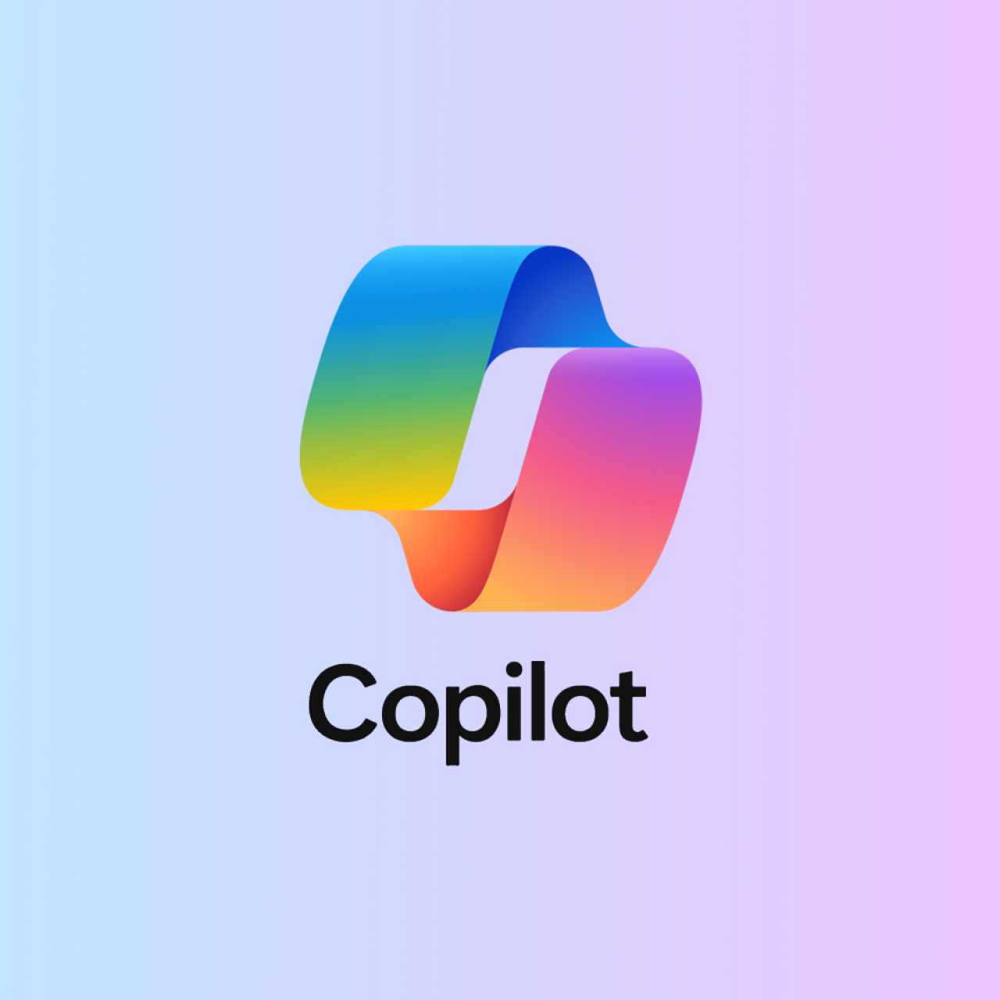
Υποενότητα 1.1
Τι είναι ο Copilot και πού θα τον συναντήσετε
Ο Copilot είναι στην απλή του μορφή ένα μοντέλο Τεχνητής Νοημοσύνης της Microsoft, παρόμοιο με αυτά που ήδη έχετε γνωρίσει: το ChatGPT και το Gemini. Όπως και εκείνα, έχει σχεδιαστεί για να καταλαβαίνει φυσική γλώσσα, να απαντά στις ερωτήσεις σας, να σας προτείνει ιδέες και να σας βοηθά σε διάφορες εργασίες.
Αυτό σημαίνει πως μπορείτε να του γράψετε κάτι απλό, όπως:
✔ Παραδείγματα ερωτήσεων
«Τι είναι η τεχνητή νοημοσύνη με απλά λόγια;» «Βρες μου τίτλους για μια εργασία σχετική με το περιβάλλον»
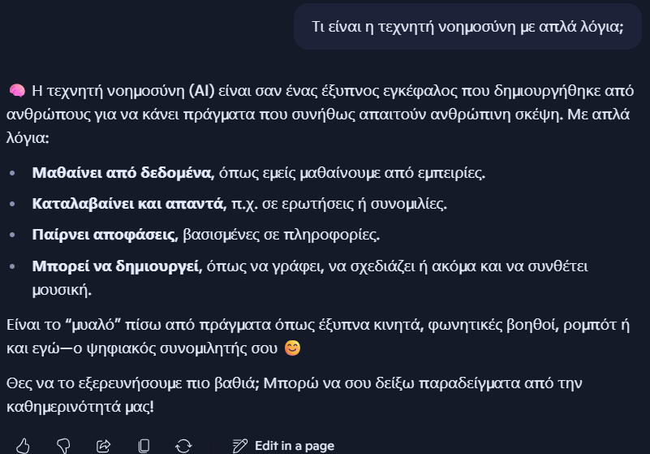
Υποενότητα 1.1.1
Copilot στον Browser
Υπάρχουν δύο βασικά είδη Copilot που θα χρησιμοποιήσετε. Το πρώτο είναι ο Copilot στον browser — ο πιο απλός και άμεσος τρόπος να τον δοκιμάσετε. Δεν χρειάζεται να έχετε εγκατεστημένο κάποιο πρόγραμμα: αρκεί να ανοίξετε τον browser σας (π.χ. Microsoft Edge ή Chrome) και να γράψετε την ερώτησή σας.
Είναι ιδανικός για απλές ερωτήσεις και πληροφορίες, βοήθεια στη σύνταξη κειμένων, παραγωγή ιδεών και περιλήψεων.
Μόλις μπείτε στη σελίδα https://copilot.microsoft.com, έχετε μπροστά σας έναν έξυπνο βοηθό που περιμένει να του δώσετε οδηγίες.
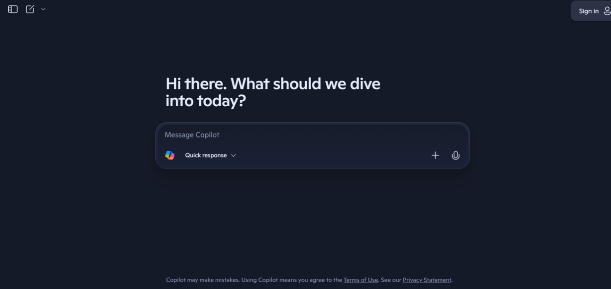
Υποενότητα 1.1.2
Microsoft Copilot μέσα στις εφαρμογές του 365
Το Microsoft Copilot είναι ο έξυπνος βοηθός σας μέσα στις εφαρμογές του Microsoft 365, όπως το Word, το Excel, το Outlook και το PowerPoint. Χρησιμοποιεί Τεχνητή Νοημοσύνη για να σας βοηθήσει να γράφετε, να οργανώνετε, να υπολογίζετε και να δημιουργείτε πιο γρήγορα και εύκολα.
Μπορείτε να του δώσετε οδηγίες με φυσική γλώσσα — δηλαδή όπως θα τις λέγατε σε έναν συνάδελφο — και εκείνος θα αναλάβει να κάνει τη δουλειά για εσάς. Για παράδειγμα:
Να γράψει ένα προσχέδιο για ένα έγγραφο.
Να δημιουργήσει έναν πίνακα στο Excel με βάση δεδομένα.
Να σας προτείνει ιδέες για μια παρουσίαση στο PowerPoint.
Να προτείνει απαντήσεις ή να συνοψίσει μεγάλα email.
🤝
Το Copilot είναι σαν να έχετε έναν προσωπικό βοηθό που συνεργάζεται μαζί σας κάθε στιγμή που δουλεύετε στον υπολογιστή. Εμφανίζεται ως βοηθός μέσα στην εφαρμογή, με ειδικό εικονίδιο, και λειτουργεί σε συνεργασία με τα περιεχόμενά σας.
ΑΝΑΛΥΤΙΚΗ ΥΠΟΕΝΟΤΗΤΑΕξήγηση · Παράδειγμα · Εφαρμογή
Συμπληρωματική υποενότητα · Υποενότητα 1.1
Ποιο Copilot χρησιμοποιώ και σε ποια δεδομένα έχει πρόσβαση;
Μαθησιακός στόχος: Να ελέγχετε περιβάλλον, λογαριασμό και δικαιώματα.
4 βήματα μελέτης · προσπάθησε πριν δεις την ανατροφοδότηση
Το όνομα Copilot χρησιμοποιείται σε διαφορετικά προϊόντα και περιβάλλοντα. Οι ενημερώσεις Microsoft 365 Copilot αφορούν αυτό το προϊόν και τις συγκεκριμένες πλατφόρμες που αναφέρονται. Η Microsoft περιγράφει σταδιακή διάθεση λειτουργιών μέσα στους οργανισμούς, επομένως δύο χρήστες μπορεί να βλέπουν διαφορετικές επιλογές.
Ελέγξτε αν χρησιμοποιείτε προσωπικό ή λογαριασμό εργασίας/εκπαίδευσης.
Εντοπίστε την εφαρμογή: browser, Word, Excel, PowerPoint ή Microsoft 365 Copilot Chat.
Ελέγξτε ποιο αρχείο ή ποια πηγή χρησιμοποιείται στη συγκεκριμένη απάντηση.
Αν λείπει μια λειτουργία, ανατρέξτε στις προϋποθέσεις και στον διαχειριστή, αντί να θεωρήσετε ότι κάνατε λάθος στα βήματα.
Μικρή άσκηση
Συνάδελφος βλέπει νέα λειτουργία στο Excel, ενώ εσείς όχι. Αποδεικνύει αυτό ότι ο οδηγός είναι λανθασμένος;
Δείτε ενδεικτική απάντηση και εξήγηση
Όχι. Μπορεί να διαφέρουν το κανάλι ενημέρωσης, η πλατφόρμα, η άδεια ή η σταδιακή διάθεση. Καταγράφουμε το περιβάλλον πριν αναζητήσουμε λύση.
Λογαριασμός, περιβάλλον και πραγματικά διαθέσιμα δεδομένα
Η ονομασία Copilot καλύπτει διαφορετικά περιβάλλοντα και λειτουργίες. Ο χρήστης μπορεί να εργάζεται σε συνομιλία, μέσα σε εφαρμογή Microsoft 365 ή με εξειδικευμένο agent. Η εμπειρία επηρεάζεται από άδεια, λογαριασμό, πολιτικές οργανισμού και διαθέσιμα εργαλεία. Για αυτό η πρώτη ερώτηση πριν από μια σημαντική εργασία είναι «σε ποιο περιβάλλον βρίσκομαι και ποιο υλικό έχει πράγματι πρόσβαση ο βοηθός;».
Η πρόσβαση δεν πρέπει να συνάγεται μόνο από την εμφάνιση μιας απάντησης. Αν ζητήσουμε σύνοψη εγγράφου που δεν έχει επισυναφθεί ή επιλεγεί, ο βοηθός μπορεί να χρειάζεται συγκεκριμένη αναφορά στο αρχείο. Ένα γενικό κείμενο για το θέμα δεν αποδεικνύει ότι διαβάστηκε το δικό μας έγγραφο. Ζητάμε αναγνωρίσιμα στοιχεία πηγής και ελέγχουμε αν η απάντηση αντιστοιχεί στο συγκεκριμένο περιεχόμενο.
Η οργάνωση της εργασίας περιλαμβάνει και τον διαχωρισμό προσωπικών και οργανωτικών δεδομένων. Δεν μεταφέρουμε υλικό σε άλλο περιβάλλον μόνο για να εμφανιστεί μια επιθυμητή λειτουργία, χωρίς να εξετάσουμε αν αυτό επιτρέπεται. Αν η δυνατότητα δεν είναι διαθέσιμη, επιλέγουμε εγκεκριμένη εναλλακτική. Η αποτελεσματικότητα προκύπτει από τη σωστή αντιστοίχιση εργασίας, πρόσβασης και εργαλείου.
Παράδειγμα: δύο χρήστες βλέπουν διαφορετικές επιλογές
Υποθετικό εκπαιδευτικό σενάριο
Δύο συνάδελφοι προσπαθούν να αναλύσουν έναν πίνακα. Ο ένας εργάζεται μέσα στο Excel του οργανισμού, ενώ ο άλλος σε προσωπική συνομιλία. Η διαφορετική πρόσβαση σε αρχείο και εργαλεία μπορεί να εξηγεί τη διαφορετική συμπεριφορά. Δεν είναι ασφαλές να υποθέσουμε ότι η ίδια ονομασία σημαίνει ίδια δυνατότητα.
Η ομάδα καταγράφει το περιβάλλον της δοκιμής και χρησιμοποιεί συνθετικό αρχείο για αρχικό έλεγχο. Έτσι μπορεί να εξετάσει τη λειτουργία χωρίς να μεταφέρει πραγματικά οργανωτικά στοιχεία σε μη εγκεκριμένο χώρο.
Ενδεικτική οδηγία
Πριν αναλύσεις, δήλωσε ποιο επιλεγμένο αρχείο χρησιμοποιείς και ποια φύλλα ή πεδία είναι διαθέσιμα. Αν δεν έχεις πρόσβαση στο αρχείο, ζήτησε το κατάλληλο υλικό αντί να δώσεις γενική ανάλυση σαν να το διάβασες.
Εργαστήριο εφαρμογής
Μια απάντηση περιγράφει γενικά το θέμα ενός εγγράφου. Τι χρειάζεται για να βεβαιωθούμε ότι χρησιμοποιήθηκε το συγκεκριμένο αρχείο;
Μεταφορά στη δική σου πράξη
Ποια στοιχεία θα κατέγραφες για να μπορεί ένας συνάδελφος να επαναλάβει τη δική σου δοκιμή Copilot;
Οι σημειώσεις παραμένουν σε αυτόν τον browser.
Κριτήρια αυτοαξιολόγησης
Έλεγξε αν η απάντησή σου συνδέεται με τη συγκεκριμένη έννοια, περιλαμβάνει ένα εφαρμόσιμο παράδειγμα και εξηγεί πώς θα ελέγξεις το αποτέλεσμα. Σύγκρινέ την με την αναλυτική εξήγηση και συζήτησε τυχόν αμφιβολία με τον εκπαιδευτή.
Υποενότητα 1.2
Πώς σας βοηθά ο Edge: οργάνωση και ιδέες
Χρησιμοποιώντας τον Copilot από τον Microsoft Edge, έχετε έναν βοηθό στη διάθεσή σας όποτε χρειαστείτε γρήγορες απαντήσεις, ιδέες ή βοήθεια για καθημερινές εργασίες. Είναι σαν να ρωτάτε κάποιον «έμπειρο» φίλο που τα ξέρει όλα και σας απαντά μέσα σε δευτερόλεπτα.
Για οργανωτικά θέματα:
«Φτιάξε ένα πρόγραμμα μελέτης για 5 μέρες»
«Τι να μαγειρέψω με πατάτες, αυγά και τυρί;»
«Οργάνωσέ μου μια λίστα για τις αποσκευές διακοπών 5 ημερών»
«Φτιάξε ένα ημερήσιο πρόγραμμα για κάποιον που δουλεύει 9-5 και θέλει να γυμνάζεται»
Για δημιουργικότητα και ιδέες:
«Πρότεινέ μου 3 ιδέες για ευχετήριο μήνυμα γενεθλίων»
«Δώσε μου 5 έξυπνες λεζάντες για Instagram»
«Βρες μου τίτλους για ένα podcast σχετικά με την υγεία»
«Δώσε μου ιδέες για χειροποίητα δώρα για φίλους»
Υποενότητα 1.2
Πώς σας βοηθά ο Edge: κείμενα και σπουδές
Για τη συγγραφή κειμένων:
«Γράψε ένα επαγγελματικό email παραίτησης»
«Φτιάξε μου μια εισαγωγή για εργασία κοινωνιολογίας»
«Ξαναγράψε αυτό το κείμενο σε πιο φιλικό ύφος»
«Γράψε ένα σύντομο βιογραφικό κείμενο για παρουσίαση σε εκδήλωση»
Για τις σπουδές σας:
«Γράψε μια περίληψη για τον Β΄ Παγκόσμιο Πόλεμο»
«Τι είναι η τεχνητή νοημοσύνη με απλά λόγια;»
«Πες μου 3 τίτλους για εργασία σχετική με την προστασία του περιβάλλοντος»
«Φτιάξε μου ένα σχεδιάγραμμα για έκθεση με θέμα "Το σχολείο του μέλλοντος"»
💡
Αυτά είναι μόνο μερικά παραδείγματα που δείχνουν πώς μπορείτε να αξιοποιήσετε τον Copilot μέσω του Microsoft Edge στην καθημερινότητά σας. Είτε χρειάζεστε βοήθεια για μια εργασία, είτε ιδέες για δημιουργικά projects, είτε απλώς μια γρήγορη απάντηση, ο Copilot είναι εκεί για να σας κάνει τη ζωή πιο εύκολη.
Υποενότητα 2.1
Σημεία πρόσβασης — 1ος τρόπος
Πριν ξεκινήσετε να χρησιμοποιείτε τον Copilot, είναι σημαντικό να γνωρίσετε το περιβάλλον μέσα στο οποίο θα εργάζεστε. Είτε τον χρησιμοποιείτε μέσα από τον Microsoft Edge, είτε μέσα από τις εφαρμογές του Microsoft 365, ο Copilot εμφανίζεται με ένα γνώριμο, εύκολο στη χρήση παράθυρο συνομιλίας.
Ο Copilot είναι πάντα «κοντά σας» — αρκεί να ξέρετε πού να τον βρείτε. Στον Microsoft Edge: Όταν ανοίγετε τον browser Microsoft Edge, θα δείτε πάνω δεξιά ένα μικρό εικονίδιο με το λογότυπο του Copilot. Πατήστε πάνω του και θα ανοίξει ένα πλαϊνό παράθυρο συνομιλίας, χωρίς να φύγετε από τη σελίδα που βλέπετε.
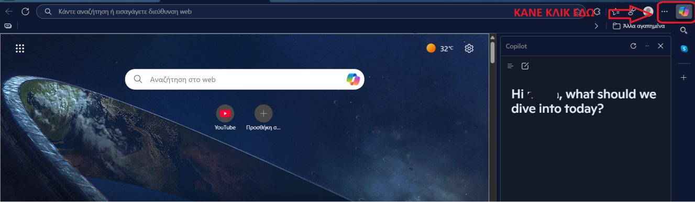
Υποενότητα 2.1
Σημεία πρόσβασης — 2ος & 3ος τρόπος
2ος Τρόπος: Κάνοντας κλικ στο εικονίδιο που εμφανίζεται στο πλαίσιο αναζήτησης, τότε και πάλι ανοίγει η συνομιλία με τον Copilot, αλλά πλέον σε πλήρες παράθυρο.
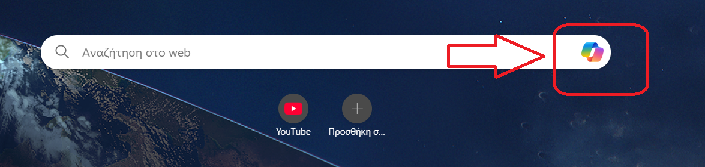
3ος Τρόπος: Αν δεν θέλετε να κάνετε χρήση του browser Microsoft Edge, τότε μπορείτε να αντιγράψετε τον ακόλουθο σύνδεσμο και να τον επικολλήσετε στον browser της επιλογής σας: https://copilot.microsoft.com/
Υποενότητα 2.2
Κύρια οθόνη και στοιχεία πλοήγησης
Μόλις μπείτε στη σελίδα, θα δείτε μπροστά σας την κύρια οθόνη του Copilot. Είναι ένα καθαρό και απλό περιβάλλον, σχεδιασμένο ώστε να μην σας μπερδεύει και να μπορείτε να ξεκινήσετε άμεσα.
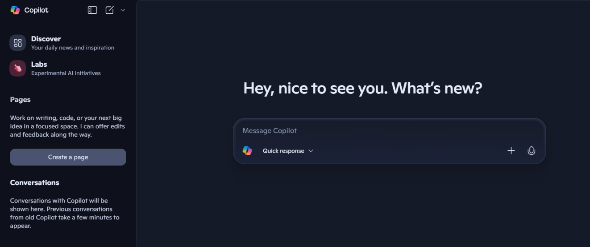
Τα βασικά στοιχεία που θα δείτε είναι:
Πεδίο συνομιλίας (Message Copilot): Στο κάτω μέρος της οθόνης υπάρχει ένα μεγάλο πλαίσιο όπου μπορείτε να γράψετε την ερώτησή σας ή την εντολή σας — το prompt σας. Εκεί ξεκινά κάθε συνομιλία με τον Copilot.
Εικονίδιο μικροφώνου: Αν ο υπολογιστής σας το υποστηρίζει, μπορείτε να μιλήσετε αντί να πληκτρολογήσετε.
Κουμπί αποστολής: Πατάτε το κουμπί για να στείλετε την ερώτησή σας ή απλώς πατάτε Enter.
Υποενότητα 2.2
Επιλογές τρόπου απάντησης
Κάτω από το πεδίο συνομιλίας υπάρχει ένα μενού όπου μπορείτε να επιλέξετε πώς θέλετε να σας απαντήσει ο Copilot, ανάλογα με το τι ζητάτε:
Quick response: Είναι η προεπιλεγμένη επιλογή. Δίνει άμεσες και σύντομες απαντήσεις (2–3 δευτερόλεπτα). Ιδανικό για καθημερινές ερωτήσεις, γρήγορες απαντήσεις και απλές πληροφορίες.
Think Deeper: Ο Copilot παίρνει λίγο περισσότερο χρόνο (περίπου 30 δευτερόλεπτα) για να σας δώσει πιο αναλυτική και ολοκληρωμένη απάντηση, κατάλληλη για σύνθετα θέματα ή πιο απαιτητικές ερωτήσεις.
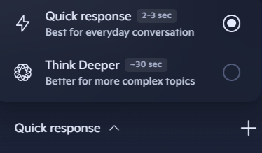
ℹ️
Αυτές οι 2 επιλογές σάς παρέχονται στην περίπτωση που είστε χρήστης της δωρεάν έκδοσης.
Αν έχετε κάνει συνδρομή, σε αυτή την περίπτωση σάς δίνεται μια επιπλέον επιλογή: «Deep Research».
Deep Research: Αυτή η επιλογή είναι κατάλληλη όταν χρειάζεστε λεπτομερή απάντηση, αναλύσεις ή ακόμα και πηγές και παραπομπές. Ο Copilot σε αυτήν τη λειτουργία χρειάζεται λίγο περισσότερο χρόνο (περίπου 10 λεπτά), αλλά σας προσφέρει αποτέλεσμα που μοιάζει με μικρή ερευνητική εργασία.
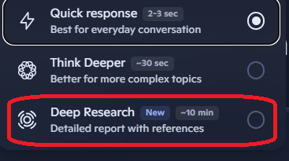
ΑΝΑΛΥΤΙΚΗ ΥΠΟΕΝΟΤΗΤΑΕξήγηση · Παράδειγμα · Εφαρμογή
Συμπληρωματική υποενότητα · Υποενότητα 2.2
Researcher, Analyst και Facilitator: διαφορετικοί ρόλοι
Μαθησιακός στόχος: Να επιλέγετε ειδικευμένο βοηθό ανάλογα με το ζητούμενο.
4 βήματα μελέτης · προσπάθησε πριν δεις την ανατροφοδότηση
Η Microsoft παρουσιάζει ειδικευμένους agents μέσα στο οικοσύστημα Microsoft 365. Ο Researcher υποστηρίζει έρευνα και σύνθεση, ο Analyst ανάλυση δεδομένων και ο Facilitator συνεργασία σε συναντήσεις Teams. Η γενική διάθεση μιας δυνατότητας δεν σημαίνει αυτόματα πρόσβαση από κάθε λογαριασμό.
Ανάγκη
Ρόλος που εξετάζουμε
Ανθρώπινος έλεγχος
Ερευνητικό ενημερωτικό
Researcher
Πρωτογενείς πηγές και ισχυρισμοί
Αριθμητική ανάλυση
Analyst
Δεδομένα, μονάδες και υπολογισμοί
Σημειώσεις συνάντησης
Facilitator
Αποφάσεις, υπεύθυνοι και προθεσμίες
Στο δικό μας σενάριο, μια ομάδα προετοιμάζει απολογισμό σεμιναρίου. Δεν ζητάμε απλώς «κάνε την αναφορά». Αναθέτουμε συγκεκριμένο παραδοτέο και ζητάμε να φαίνονται τα ανεπίλυτα ζητήματα. Αν η ειδική λειτουργία δεν υπάρχει, η άσκηση εκτελείται με συνθετικά δεδομένα και χειροκίνητο έλεγχο.
Μικρή άσκηση
Ο agent αποδίδει μια εργασία σε συνάδελφο που δεν την ανέλαβε ρητά στη συνάντηση. Τι διορθώνουμε;
Δείτε ενδεικτική απάντηση και εξήγηση
Χαρακτηρίζουμε τον υπεύθυνο ως μη επιβεβαιωμένο και επιστρέφουμε στο πρακτικό ή στην καταγραφή. Η ερμηνεία του AI δεν δημιουργεί από μόνη της συμφωνία.
Εξειδίκευση του βοηθού και ευθύνη για το αποτέλεσμα
Ένας εξειδικευμένος agent οργανώνει μια κατηγορία εργασιών με κατάλληλη πρόσβαση και εργαλεία. Ο Researcher προσανατολίζεται στην έρευνα και στη σύνθεση, ο Analyst στην ανάλυση δεδομένων και ο Facilitator στη συνεργασία. Αυτή η διάκριση βοηθά την ανάθεση, αλλά δεν σημαίνει ότι ο ρόλος εγγυάται ορθότητα. Το παραδοτέο πρέπει να ελεγχθεί με κριτήρια που αντιστοιχούν στο είδος της εργασίας.
Στην ερευνητική εργασία ελέγχουμε αν οι πηγές στηρίζουν τους ισχυρισμούς και αν παρουσιάζονται περιορισμοί. Στην ανάλυση δεδομένων εξετάζουμε ορισμούς, τύπους και μετασχηματισμούς. Στη σύνοψη συνάντησης ελέγχουμε αν αποδόθηκαν σωστά αποφάσεις, υπεύθυνοι και εκκρεμότητες. Η ίδια γενική ερώτηση «είναι καλή η απάντηση;» αντικαθίσταται από συγκεκριμένους ελέγχους που μπορούν να εφαρμοστούν.
Όταν συνεργάζονται περισσότεροι βοηθοί ή εργαλεία, χρειάζονται σαφείς μεταβιβάσεις. Το επόμενο στάδιο πρέπει να λαμβάνει τις ίδιες πηγές, μονάδες και παραδοχές που χρησιμοποιήθηκαν στο προηγούμενο. Διαφορετικά μπορεί να παραχθεί συνεπές κείμενο πάνω σε διαφορετικά δεδομένα. Η ομάδα διατηρεί κοινή προδιαγραφή και ελέγχει τα σημεία όπου αλλάζει μορφή ή υπεύθυνος επεξεργασίας.
Παράδειγμα: από τη συνάντηση στην ενημέρωση διοίκησης
Υποθετικό εκπαιδευτικό σενάριο
Η συνάντηση καταλήγει σε δύο αποφάσεις και ένα ανοιχτό ερώτημα. Η σύνοψη πρέπει να κρατήσει αυτή τη διάκριση. Στη συνέχεια μια ανάλυση εξετάζει τα σχετικά δεδομένα και μια ερευνητική αναφορά παρουσιάζει εξωτερικές πληροφορίες. Οι εργασίες συνδέονται, αλλά δεν έχουν το ίδιο είδος τεκμηρίου.
Πριν από την τελική ενημέρωση, η ομάδα ελέγχει ότι το ανοιχτό ερώτημα δεν μετατράπηκε σε ειλημμένη απόφαση και ότι κάθε αριθμός έχει κοινή προέλευση. Η εξειδίκευση επιταχύνει την εργασία όταν οι μεταβιβάσεις παραμένουν διαφανείς.
Ενδεικτική οδηγία
Δώσε χωριστά αποφάσεις, προτάσεις και εκκρεμότητες. Για τις αποφάσεις κατέγραψε υπεύθυνο και προθεσμία μόνο αν αναφέρονται. Μην μετατρέψεις ένα θέμα προς διερεύνηση σε συμφωνημένη ενέργεια.
Εργαστήριο εφαρμογής
Αντιστοίχισε το παραδοτέο με τον κρίσιμο έλεγχο.
Μεταφορά στη δική σου πράξη
Διάλεξε έναν από τους τρεις ρόλους και γράψε δύο κριτήρια που θα χρησιμοποιούσες πριν αξιοποιήσεις το αποτέλεσμά του.
Οι σημειώσεις παραμένουν σε αυτόν τον browser.
Κριτήρια αυτοαξιολόγησης
Έλεγξε αν η απάντησή σου συνδέεται με τη συγκεκριμένη έννοια, περιλαμβάνει ένα εφαρμόσιμο παράδειγμα και εξηγεί πώς θα ελέγξεις το αποτέλεσμα. Σύγκρινέ την με την αναλυτική εξήγηση και συζήτησε τυχόν αμφιβολία με τον εκπαιδευτή.
Υποενότητα 2.2
Το πλαϊνό μενού
Στην αριστερή πλευρά της οθόνης σας υπάρχει ένα πλαϊνό μενού με διάφορες επιλογές που σας δίνουν πρόσβαση σε επιπλέον λειτουργίες του Copilot. Ας δούμε τι περιλαμβάνει:
Εδώ θα βρείτε ειδήσεις, προτάσεις και ιδέες που μπορεί να σας εμπνεύσουν. Είναι σαν αρχική σελίδα με έξυπνα θέματα που επιλέγονται για εσάς.
Εδώ δοκιμάζονται πειραματικές δυνατότητες της Τεχνητής Νοημοσύνης. Είναι ένα «εργαστήριο» όπου η Microsoft ελέγχει νέες λειτουργίες που ίσως δείτε στο μέλλον.
Με το κουμπί Create a page, μπορείτε να ξεκινήσετε να γράφετε ένα μεγαλύτερο κείμενο (όπως μια εργασία, ένα άρθρο ή κώδικα) σε έναν ξεχωριστό χώρο, όπου ο Copilot θα σας προσφέρει βοήθεια, παρατηρήσεις και διορθώσεις καθώς γράφετε.
Εδώ θα εμφανίζονται όλες οι προηγούμενες συνομιλίες σας με τον Copilot. Μπορείτε να επιστρέψετε σε μια παλιά συζήτηση και να συνεχίσετε από εκεί που σταματήσατε.
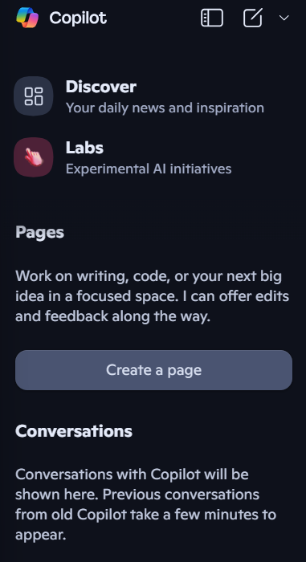
Υποενότητα 2.3
Είσοδος με λογαριασμό
Για να χρησιμοποιήσετε πλήρως τον Copilot μέσω browser, χρειάζεται να κάνετε είσοδο (Sign in) με τον λογαριασμό σας.
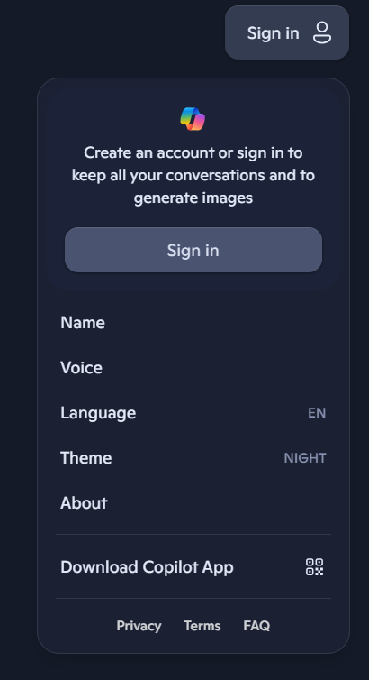
Υποενότητα 2.3
Τρόποι εισόδου
Όταν πατήσετε «Sign in» στη σελίδα του Copilot, θα σας εμφανιστεί μια οθόνη σαν αυτή:
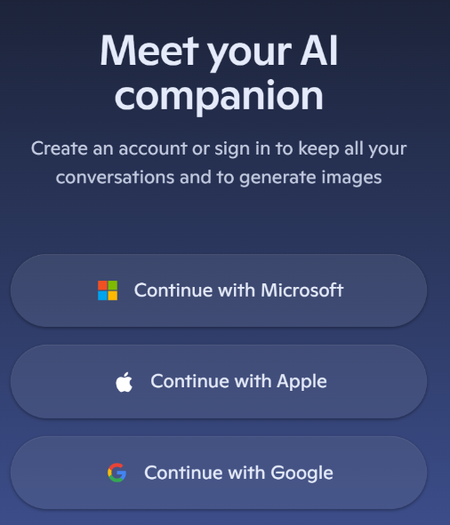
Έχετε τη δυνατότητα να επιλέξετε τον τρόπο με τον οποίο θέλετε να συνδεθείτε:
Continue with Microsoft: Εδώ χρησιμοποιείτε έναν λογαριασμό Microsoft (π.χ. Outlook, Hotmail, ή λογαριασμό από τη δουλειά σας).
Continue with Apple: Αν έχετε Apple ID, μπορείτε να μπείτε εύκολα με αυτό, χωρίς να φτιάξετε ξεχωριστό λογαριασμό Microsoft.
Continue with Google: Εάν έχετε Gmail ή Google λογαριασμό, μπορείτε να μπείτε με αυτόν.
🔑
Όποιον τρόπο και να επιλέξετε, ο Copilot θα θυμάται τις συνομιλίες σας και θα ενεργοποιήσει όλες τις λειτουργίες που είναι διαθέσιμες για εσάς.
Υποενότητα 2.4
Ρυθμίσεις χρήστη
Μόλις συνδεθείτε στον Copilot, μπορείτε να προσαρμόσετε μερικά βασικά στοιχεία του λογαριασμού σας και της εμπειρίας σας. Οι ρυθμίσεις χρήστη σάς επιτρέπουν να έχετε τον Copilot όπως σας βολεύει, να βλέπετε το ιστορικό σας ή να αλλάζετε λογαριασμό.
Πού βρίσκονται οι ρυθμίσεις; Πάνω δεξιά στην οθόνη, δίπλα από το όνομά σας ή το εικονίδιο του προφίλ σας, θα βρείτε το κουμπί Ρυθμίσεις (Settings) — ή πατήστε απλά στο εικονίδιο που δείχνει πως είστε συνδεδεμένοι.
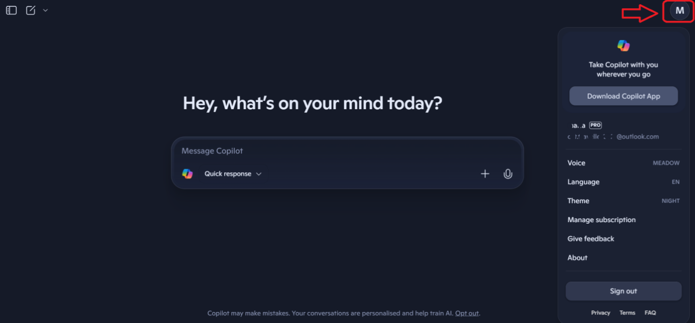
Υποενότητα 2.4
Τι μπορείτε να κάνετε από εκεί
Όταν κάνετε κλικ πάνω δεξιά στο όνομά σας ή στο εικονίδιο του προφίλ σας, εμφανίζεται ένα μενού όπως φαίνεται στην εικόνα:
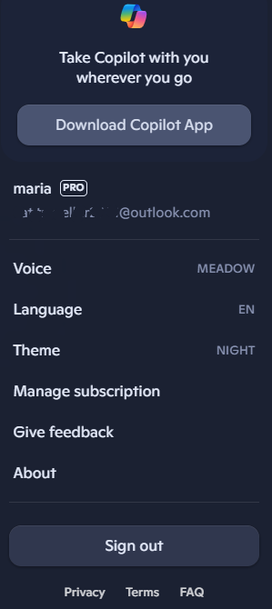
Επιλέγετε τη φωνή που θα χρησιμοποιεί ο Copilot όταν σας απαντάει με ήχο. (Η επιλογή «Meadow» είναι ένα παράδειγμα φωνής.)
Η γλώσσα στην οποία εμφανίζεται η διεπαφή και δέχεται τα prompts σας. Συνήθως είναι EN (Αγγλικά). Αν θέλετε, μπορείτε να αλλάξετε γλώσσα, αλλά προς το παρόν πολλές λειτουργίες δουλεύουν καλύτερα στα Αγγλικά.
Μπορείτε να αλλάξετε το χρώμα του περιβάλλοντος:
Light: Ανοιχτό φόντο
Night ή Dark: Σκούρο φόντο για ξεκούραστα μάτια
Αν χρησιμοποιείτε την επί πληρωμή έκδοση, από εδώ μπορείτε να διαχειριστείτε τη συνδρομή σας (π.χ. ανανέωση, ακύρωση).
Αν κάτι δεν λειτούργησε όπως περιμένατε ή αν έχετε πρόταση βελτίωσης, μπορείτε να στείλετε τα σχόλιά σας στην ομάδα του Copilot.
Βασικές πληροφορίες για την έκδοση του Copilot που χρησιμοποιείτε.
Κάντε αποσύνδεση όταν ολοκληρώσετε τη χρήση του Copilot — ειδικά αν είστε σε δημόσιο ή κοινόχρηστο υπολογιστή.
💡
Tip! Αν θέλετε, μπορείτε να κατεβάσετε και την εφαρμογή για κινητό πατώντας το «Download Copilot App», ώστε να τον έχετε πάντα μαζί σας.
Κεφάλαιο 3
Ξεκινώντας το Prompt
Τώρα που γνωρίζετε πού βρίσκεται ο Copilot και πώς λειτουργεί το περιβάλλον του, ήρθε η ώρα να ξεκινήσετε πραγματικά να συνομιλείτε μαζί του — δηλαδή να του δίνετε εντολές ή ερωτήσεις, τα γνωστά prompts.
Δεν χρειάζεται να είστε ειδικοί. Το μόνο που χρειάζεται είναι να μάθετε πώς να του μιλάτε καθαρά και σωστά, για να παίρνετε χρήσιμες και ακριβείς απαντήσεις.
Για να συνεργαστείτε σωστά με τον Copilot, χρειάζεται να μάθετε πώς να του δίνετε οδηγίες με τον σωστό τρόπο. Ακολουθούν οι βασικές αρχές για να γράφετε καλά prompts.
Υποενότητα 3.1 · Βασικές αρχές
1. Σκεφτείτε πρώτα τι θέλετε
Πριν γράψετε κάτι, κάντε μια απλή ερώτηση στον εαυτό σας: «Τι περιμένω από τον Copilot να κάνει για μένα;» Αυτό μπορεί να είναι: να σας προτείνει ιδέες, να γράψει ένα κείμενο, να κάνει μια περίληψη, να εξηγήσει κάτι ή να σας βοηθήσει να οργανωθείτε.
✔ Παράδειγμα
«Θέλω να μου προτείνει τρόπους για να συγκεντρωθώ στο διάβασμα»
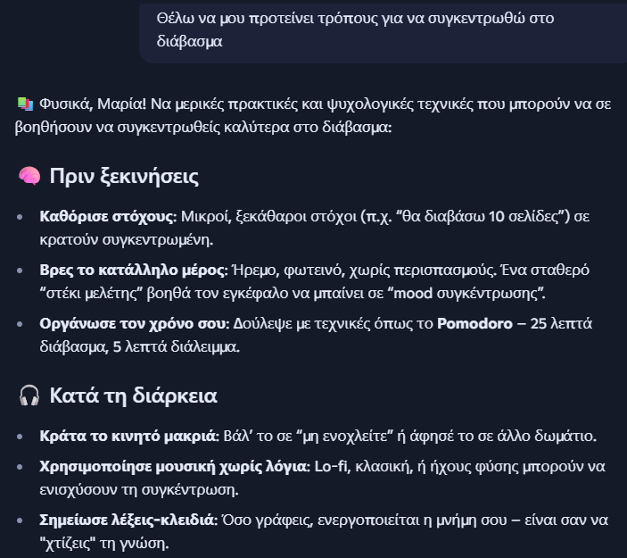
Υποενότητα 3.1 · Βασικές αρχές
2. Ξεκινήστε με κάτι απλό
Δεν χρειάζεται να γράψετε μεγάλα και πολύπλοκα prompts. Ξεκινήστε με κάτι απλό και δοκιμάστε:
✔ Παράδειγμα
«Τι είναι η ανακύκλωση;»
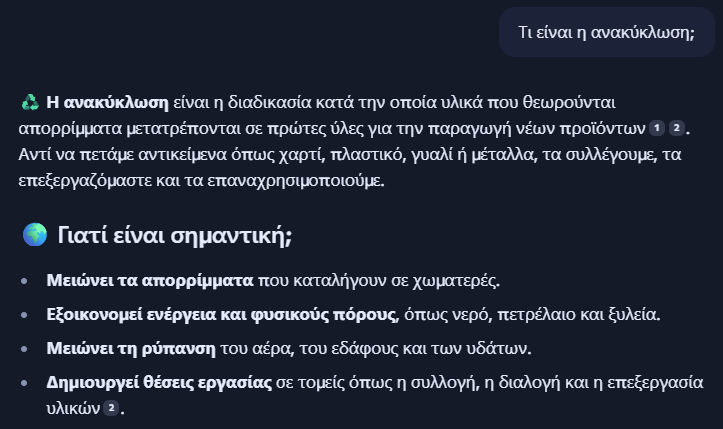
Υποενότητα 3.1 · Βασικές αρχές
3. Δοκιμάστε – Ζητήστε – Διορθώστε
Ο Copilot δεν παρεξηγείται! Αν δεν σας άρεσε η απάντηση, μπορείτε να του πείτε:
«Ξαναγράψε το πιο απλά»
«Δώσε μου άλλη εκδοχή»
«Κάν' το πιο σύντομο»
🔄
Η συνεργασία μαζί του είναι διαδραστική. Όσο πιο πολύ του μιλάτε, τόσο καλύτερα μαθαίνει το στυλ σας και τι ζητάτε.
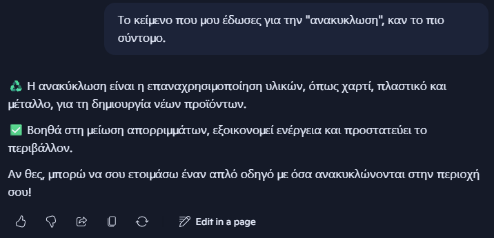
Υποενότητα 3.1 · Βασικές αρχές
4. Δώστε πλαίσιο — εξηγήστε το «για ποιο λόγο»
Αν θέλετε καλύτερη απάντηση, μπορείτε να εξηγήσετε σε ποιο πλαίσιο θα χρησιμοποιήσετε αυτό που ζητάτε. Αυτό βοηθά τον Copilot να προσαρμόσει το ύφος και το περιεχόμενο.
✔ Παράδειγμα
«Γράψε ένα email για αίτηση πρακτικής άσκησης, το στέλνω σε πανεπιστήμιο»
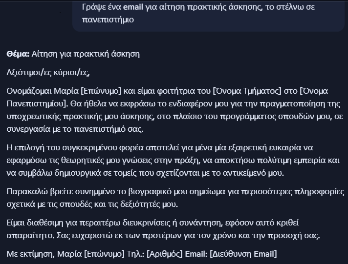
Υποενότητα 3.1 · Βασικές αρχές
5. Μη φοβάστε να πειραματιστείτε
Ο Copilot είναι εκεί για να σας βοηθήσει, όχι για να σας εξετάσει! Μπορείτε να του ζητήσετε το ίδιο πράγμα με διαφορετικούς τρόπους, να δοκιμάσετε φράσεις, να παίξετε με το ύφος, ακόμα και να του πείτε «δεν μου άρεσε, προσπάθησε αλλιώς».
✔ Παραδείγματα
«Πες το με χιουμοριστικό τρόπο» «Κάν' το να μοιάζει με στιχάκι»
🚀
Όσο πιο πολύ τον χρησιμοποιείτε, τόσο πιο σίγουροι θα νιώθετε και τόσο πιο δημιουργικοί θα γίνεστε.
Υποενότητα 3.1.1 · Σαφήνεια και ακρίβεια
Σαφήνεια και ακρίβεια — Παράδειγμα 1
Όσο πιο καθαρά και συγκεκριμένα του εξηγείτε τι θέλετε, τόσο πιο χρήσιμη θα είναι η απάντηση που θα σας δώσει ο Copilot. Αν γράψετε κάτι γενικό, το αποτέλεσμα θα είναι γενικό. Αν του πείτε ακριβώς τι χρειάζεστε, με ποιο ύφος, για ποιο σκοπό και σε ποια μορφή, τότε θα σας απαντήσει πολύ πιο σωστά.
📌
Γενική αρχή: Μη γράφετε «κάνε κάτι» — γράψτε «κάνε αυτό, με αυτόν τον τρόπο, για αυτόν τον λόγο».
✘ Λάθος prompt
«Γράψε μου κάτι για το διάστημα.»
✔ Σωστό prompt
«Γράψε μια μικρή παράγραφο (5-6 σειρές) για το ηλιακό μας σύστημα, με απλή γλώσσα κατάλληλη για ανθρώπους που έχουν βασικές γνώσεις σχετικά με αυτό το θέμα.»
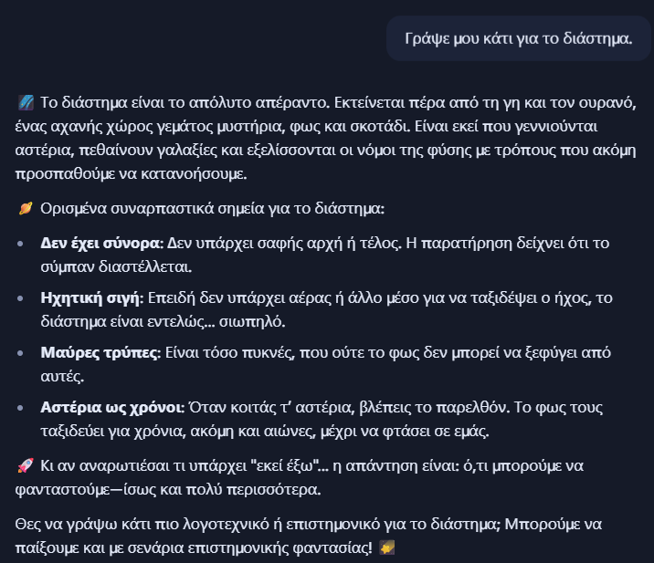
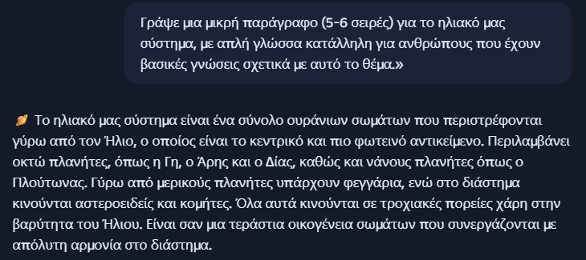
Υποενότητα 3.1.1 · Σαφήνεια και ακρίβεια
Παράδειγμα 2: Προσθέστε λεπτομέρειες
✘ Λάθος prompt με λίγες πληροφορίες
«Γράψε μια εισαγωγή για έκθεση»
✔ Σωστό prompt με πιο ακριβείς πληροφορίες
«Γράψε μια εισαγωγή για έκθεση με θέμα "Η φιλία στη ζωή των εφήβων", κατάλληλη για μαθητή Γ΄ Γυμνασίου.»
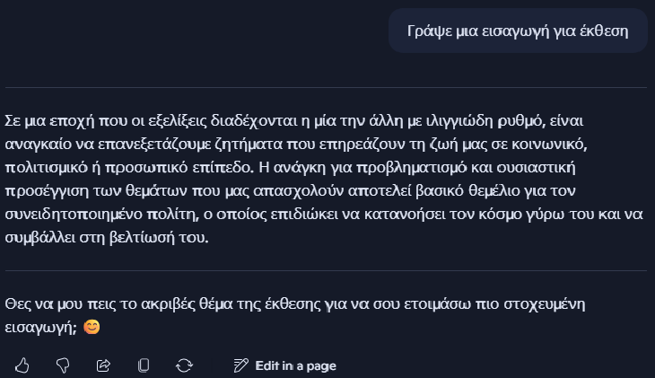
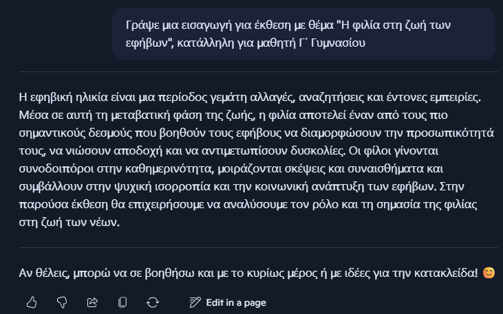
Υποενότητα 3.1.1 · Σαφήνεια και ακρίβεια
Παράδειγμα 3: Ύφος & μορφή
✘ Λάθος prompt
«Γράψε ένα ευχαριστήριο μήνυμα»
✔ Σωστό prompt
«Γράψε ένα σύντομο και φιλικό μήνυμα για να ευχαριστήσω έναν φίλο που με βοήθησε στη μετακόμιση.»
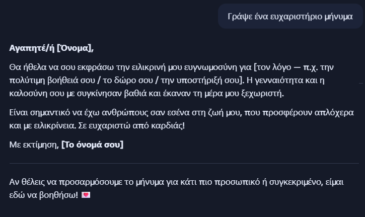
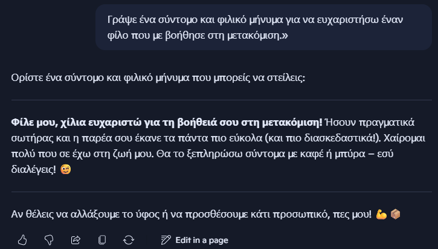
💡
Tip! Αν δείτε ότι η απάντηση δεν είναι αυτό που θέλατε, δοκιμάστε να προσθέσετε μία επιπλέον πρόταση στο prompt σας που να εξηγεί τι περιμένετε. Μερικές φορές, μια λέξη κάνει τη διαφορά.
Υποενότητα 3.1.1
Συμπέρασμα
Όταν γράφετε ένα prompt με σαφήνεια και ακρίβεια, βοηθάτε τον Copilot να καταλάβει ακριβώς τι χρειάζεστε. Αν του μιλήσετε γενικά, θα σας απαντήσει γενικά. Αν όμως του εξηγήσετε με απλά λόγια τι θέλετε, για ποιον λόγο, με ποιο ύφος και σε ποια μορφή, τότε το αποτέλεσμα θα είναι πολύ πιο κοντά σε αυτό που φαντάζεστε.
🔑
Βασικό συμπέρασμα: Γι' αυτό είναι καλό να μη βιάζεστε. Φτιάξτε το prompt σας σιγά-σιγά. Ξεκινήστε με μια βασική ιδέα και στη συνέχεια προσθέστε όσα περισσότερα στοιχεία μπορείτε (π.χ. τόνος, σκοπός, κοινό). Ένα καλό prompt είναι σαν μια σωστή ερώτηση: χρειάζεται λίγη σκέψη, αλλά σας πάει πολύ πιο μακριά.
Κεφάλαιο 4
Αλληλεπίδραση με τις εφαρμογές του Microsoft 365
Μέχρι τώρα, γνωρίσατε τον Copilot μέσα από τον browser και μάθατε πώς να του μιλάτε σωστά με καλά διατυπωμένα prompts. Τώρα ήρθε η ώρα να δείτε πώς μπορεί να σας βοηθήσει μέσα σε πραγματικές εφαρμογές, όπως το Word, το Excel, το PowerPoint και το Outlook.
Ο Microsoft Copilot ενσωματώνεται κατευθείαν σε αυτές τις εφαρμογές και λειτουργεί σαν βοηθός που «κάθεται δίπλα σας». Μπορεί να δει τι φτιάχνετε, να καταλάβει το περιεχόμενο και να σας βοηθήσει να δημιουργήσετε πιο γρήγορα, πιο εύκολα και πιο έξυπνα.
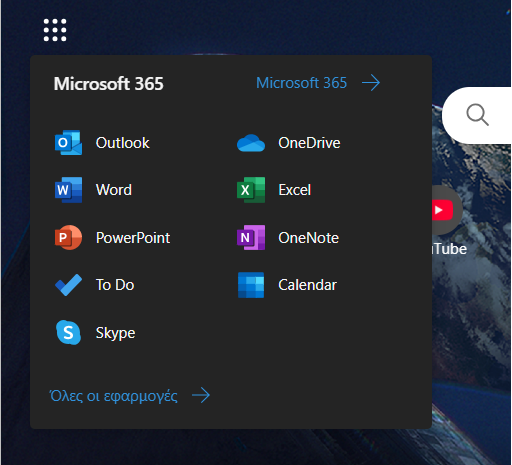
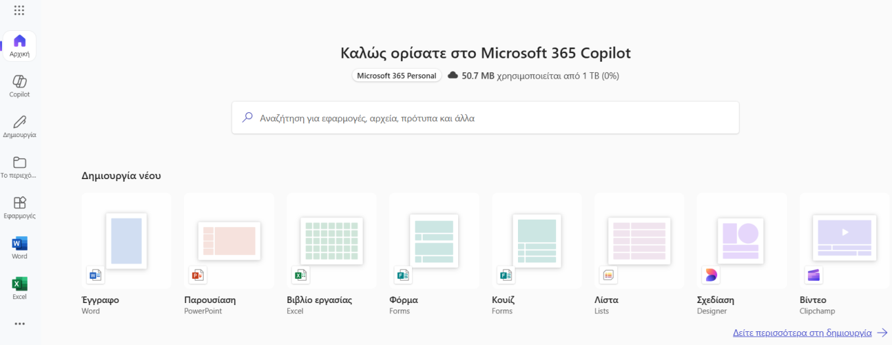
Υποενότητα 4.1 · Word
Δημιουργία και επεξεργασία νέου εγγράφου (Word)
Ανοίγοντας το Word, θα παρατηρήσετε στην επάνω δεξιά γωνία της εφαρμογής το κουμπί του Copilot. Κάνοντας κλικ σε αυτό, εμφανίζεται ένα παράθυρο συνομιλίας στα δεξιά της οθόνης σας. Από εκεί μπορείτε να αρχίσετε να του δίνετε οδηγίες, ακριβώς όπως κάνατε και στον browser.
Η διαφορά τώρα είναι πως ο Copilot έχει πλήρη εικόνα του εγγράφου σας και μπορεί να παρέμβει, να προσθέσει, να διορθώσει ή να προτείνει με βάση το κείμενο που βλέπει.
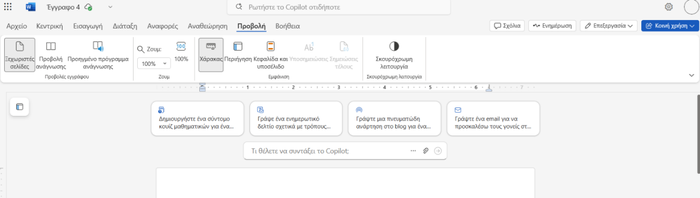
Τι μπορεί να κάνει για εσάς:
Να ξεκινήσει ένα έγγραφο από την αρχή, με βάση ένα σύντομο prompt
Να διορθώσει ορθογραφικά ή συντακτικά λάθη
Να προτείνει αναδιατύπωση ή εναλλακτικές εκφράσεις
Να σας βοηθήσει να οργανώσετε καλύτερα τη δομή ενός κειμένου
Υποενότητα 4.1 · Word
Παραδείγματα εντολών μέσα στο Word
✔ Παραδείγματα
«Γράψε μια εισαγωγή για εργασία με θέμα την προστασία του περιβάλλοντος.»
«Δημιούργησέ μου μια περίληψη σε 3-4 γραμμές του κειμένου.»
«Μετέτρεψε το ύφος του κειμένου ώστε να είναι πιο επίσημο»
«Δημιούργησε έναν τίτλο και υπότιτλο για αυτό το άρθρο»
«Πρόσθεσε μια παράγραφο με επιχειρήματα υπέρ της ανακύκλωσης»
Ας δούμε τώρα βήμα προς βήμα πώς θα δημιουργήσουμε μαζί με τον Copilot ένα κείμενο, ακολουθώντας τα παραπάνω prompts.
Υποενότητα 4.1 · Word
Ξεκινώντας ένα νέο έγγραφο
Ανοίγοντας ένα κενό αρχείο Word, εμφανίζεται ένα πλαίσιο μέσα στο οποίο θα γράψετε το prompt — δηλαδή αυτό που θέλετε να δημιουργήσει ο Copilot.
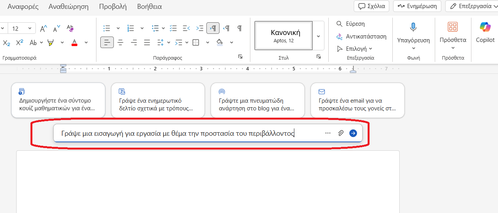
Πατώντας το «Enter» ή το βελάκι, ξεκινάει να δημιουργεί το κείμενο, όπως στην παρακάτω εικόνα.
Μόλις ολοκληρώσει αυτό που του ζητήσατε, εμφανίζει το εξής μήνυμα, όπως στην εικόνα:
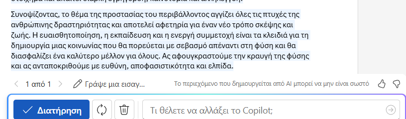
Αφού διαβάσετε το κείμενο, αν σε ένα γενικό σύνολο σας αρέσει, τότε επιλέγετε το «Διατήρηση».
Αν θέλετε να κάνει αλλαγές, τότε στο πλαίσιο που λέει «Τι θέλετε να αλλάξει το Copilot» μπορείτε να του δώσετε την αντίστοιχη εντολή.
Επίσης, μπορείτε να διατηρήσετε το κείμενο όπως είναι και στη συνέχεια να κάνετε τις αλλαγές που επιθυμείτε, όπως θα δούμε στη συνέχεια.
Αν δεν σας αρέσει το κείμενο, τότε μπορείτε να πατήσετε είτε διαγραφή, είτε «δημιουργήστε ξανά» — είναι το εικονίδιο δίπλα στη λέξη «Διατήρηση».
ΑΝΑΛΥΤΙΚΗ ΥΠΟΕΝΟΤΗΤΑΕξήγηση · Παράδειγμα · Εφαρμογή
Συμπληρωματική υποενότητα · Υποενότητα 4.1 · Word
Word: επεξεργασία με σαφείς αμετάβλητους όρους
Μαθησιακός στόχος: Να βελτιώνετε κείμενο διατηρώντας την ουσία του.
4 βήματα μελέτης · προσπάθησε πριν δεις την ανατροφοδότηση
Η χρήσιμη επεξεργασία εγγράφου ξεκινά από τη διάκριση ανάμεσα σε περιεχόμενο και διατύπωση. Όταν ζητάμε πιο απλό ύφος, δηλώνουμε ποια ονόματα, αριθμοί, όροι και τίτλοι πρέπει να διατηρηθούν. Το παράδειγμα που ακολουθεί είναι διαδικασία ποιοτικού ελέγχου για τις λειτουργίες Word που παρουσιάστηκαν ήδη.
Δοκιμάστε αυτό το prompt
Βελτίωσε τη σαφήνεια αυτού του ενημερωτικού για ενήλικους αρχάριους. Διατήρησε όλους τους τίτλους, τις ημερομηνίες, τους αριθμούς και τις παραπομπές. Μην προσθέσεις νέα πραγματικά στοιχεία. Δώσε πρώτα προτεινόμενη αναδιατύπωση και έπειτα σύντομο κατάλογο ουσιαστικών αλλαγών για έλεγχο.
Συγκρίνετε παλιό και νέο κείμενο σε κρίσιμες προτάσεις.
Ελέγξτε μήπως το «μπορεί» έγινε «εγγυάται» ή το «προτείνεται» έγινε «απαιτείται».
Ανοίξτε το έγγραφο και εξετάστε τίτλους, λίστες, πίνακες και συνδέσμους.
Διατηρήστε ελέγξιμη έκδοση πριν κοινοποιήσετε το τελικό αρχείο.
Μικρή άσκηση
Το AI μετέτρεψε το «η δράση προγραμματίζεται» σε «η δράση θα πραγματοποιηθεί». Είναι μόνο υφολογική αλλαγή;
Δείτε ενδεικτική απάντηση και εξήγηση
Όχι. Αυξάνει τη βεβαιότητα του ισχυρισμού. Επαναφέρουμε τη σωστή διατύπωση και ελέγχουμε αν έχουν αλλάξει παρόμοια σημεία.
Επιμέλεια με αμετάβλητα στοιχεία και ορατές παραδοχές
Η επεξεργασία κειμένου με AI μπορεί να βελτιώσει τη συνοχή, τη σαφήνεια και την οργάνωση. Χρειάζεται όμως να οριστεί ποια στοιχεία πρέπει να παραμείνουν αμετάβλητα. Ονόματα, ημερομηνίες, αριθμοί, επίσημοι τίτλοι και διατυπώσεις με συγκεκριμένη ισχύ δεν πρέπει να αναθεωρούνται επειδή μια εναλλακτική φράση ακούγεται πιο ομαλή. Η γλωσσική επιμέλεια είναι διαφορετική εργασία από την αλλαγή περιεχομένου.
Ένα συνηθισμένο πρόβλημα είναι η αύξηση της βεβαιότητας κατά τη σύνοψη. Η φράση «τα στοιχεία υποδηλώνουν» μπορεί να γίνει «τα στοιχεία αποδεικνύουν», ή μια πρόταση για το μέλλον να παρουσιαστεί σαν απόφαση. Αυτές οι αλλαγές δεν είναι απλώς υφολογικές. Επηρεάζουν το νόημα και τις προσδοκίες του αναγνώστη. Για αυτό ζητάμε διατήρηση επιφυλάξεων και χωριστή επισήμανση ουσιαστικών αλλαγών.
Ο έλεγχος γίνεται με σύγκριση πριν και μετά. Εξετάζουμε το κύριο μήνυμα, τα αριθμητικά στοιχεία, την απόδοση ευθύνης και τις πληροφορίες που παραλείφθηκαν. Δεν χρειάζεται να απορρίψουμε όλες τις αλλαγές επειδή βρέθηκε ένα λάθος. Διορθώνουμε συγκεκριμένα την απόκλιση και επανελέγχουμε το σχετικό σημείο. Η τελική αποδοχή παραμένει απόφαση του συντάκτη.
Παράδειγμα: ενημέρωση για ένα εκπαιδευτικό πρόγραμμα
Υποθετικό εκπαιδευτικό σενάριο
Το αρχικό κείμενο γράφει «προτείνεται να διερευνηθεί δεύτερος κύκλος». Η αναθεωρημένη εκδοχή γράφει «θα υλοποιηθεί δεύτερος κύκλος». Η φράση μετατρέπει πρόταση σε δέσμευση. Ακόμη και αν το κείμενο είναι πιο σύντομο και επαγγελματικό, η αλλαγή πρέπει να διορθωθεί.
Η οδηγία επιμέλειας ορίζει ότι οι αποφάσεις, οι προτάσεις και οι εκκρεμότητες διατηρούν τον αρχικό τους χαρακτήρα. Ο συντάκτης ζητά σύντομο κατάλογο ουσιαστικών αλλαγών, ώστε να ελέγξει γρήγορα τα σημεία που επηρεάζουν το νόημα.
Ενδεικτική οδηγία
Βελτίωσε σαφήνεια και σύνταξη χωρίς να αλλάξεις ονόματα, αριθμούς, ημερομηνίες ή βαθμό βεβαιότητας. Διατήρησε τη διάκριση προτάσεων και αποφάσεων. Επισήμανε χωριστά κάθε αλλαγή που μπορεί να επηρεάζει το νόημα.
Εργαστήριο εφαρμογής
Ποια αναδιατύπωση διατηρεί τη σημασία του «προτείνεται να διερευνηθεί»;
Μεταφορά στη δική σου πράξη
Γράψε μια οδηγία επιμέλειας για δικό σου έγγραφο, κατονομάζοντας τουλάχιστον τρία στοιχεία που δεν πρέπει να αλλάξουν.
Οι σημειώσεις παραμένουν σε αυτόν τον browser.
Κριτήρια αυτοαξιολόγησης
Έλεγξε αν η απάντησή σου συνδέεται με τη συγκεκριμένη έννοια, περιλαμβάνει ένα εφαρμόσιμο παράδειγμα και εξηγεί πώς θα ελέγξεις το αποτέλεσμα. Σύγκρινέ την με την αναλυτική εξήγηση και συζήτησε τυχόν αμφιβολία με τον εκπαιδευτή.
Υποενότητα 4.1 · Word
Πώς κάνετε αλλαγές στο κείμενο που δημιούργησε
Ο ψηφιακός βοηθός δεν σταματάει μέχρι τη δημιουργία κειμένου. Μπορεί να μας κάνει αλλαγές, διορθώσεις κ.τ.λ.
Μπορείτε να επιλέξετε την παράγραφο στην οποία θέλετε να κάνετε αλλαγές και στο τέλος της επιλογής εμφανίζεται ένα εικονίδιο, το οποίο σας δίνει διάφορες επιλογές.
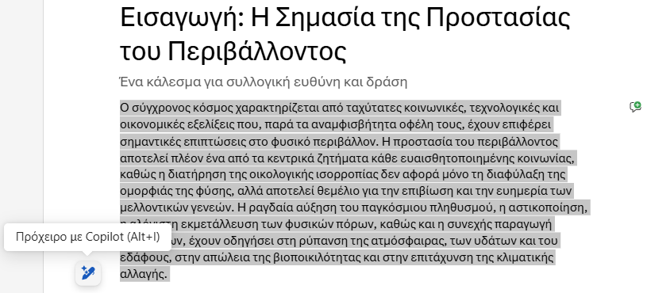
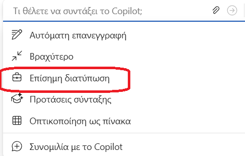
Μπορείτε είτε να επιλέξετε κάποιες από αυτές που προτείνει, είτε γράφοντάς του ένα prompt του λέτε «Τι θέλετε να συντάξει το Copilot».
Υποενότητα 4.1 · Word
Άνοιγμα του Copilot σε πλαϊνό παράθυρο
Στη συνέχεια, ανοίξτε τον Copilot σε πλαϊνό παράθυρο, ώστε να σας δημιουργήσει μια περίληψη. Στην καρτέλα «Κεντρική» στο Word, στο τέλος της καρτέλας, θα δείτε το εικονίδιο του Copilot.
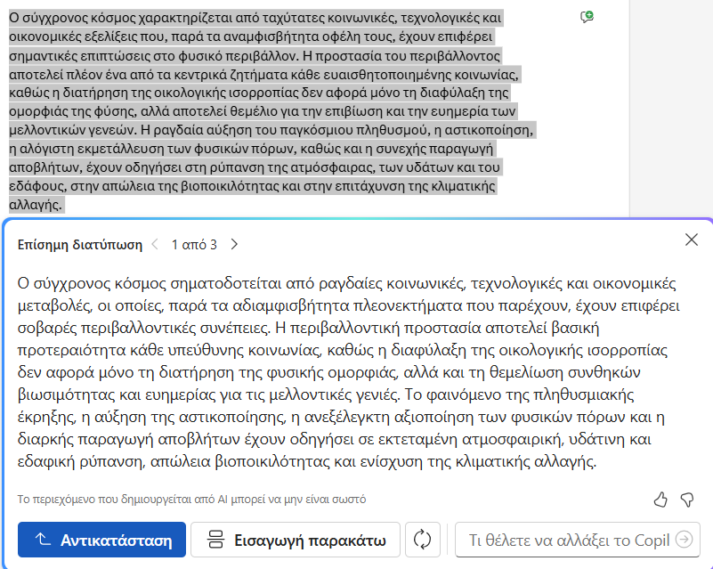
Υποενότητα 4.1 · Word
Δημιουργία περίληψης
Ο επόμενος στόχος είναι να δημιουργήσει μια περίληψη του κειμένου που δημιούργησε.
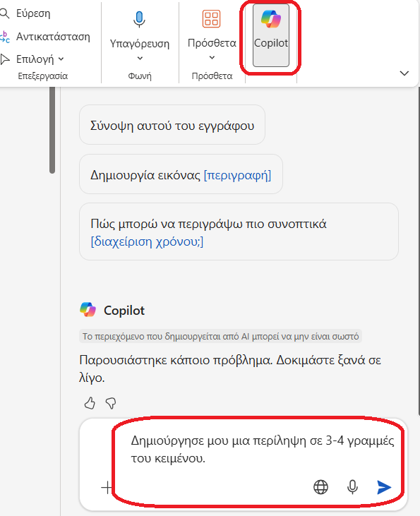
Δίνοντάς του το prompt «Δημιούργησέ μου μια περίληψη του κειμένου σε 3-4 γραμμές.», ο Copilot θα δημιουργήσει την περίληψη από το κείμενο που δημιούργησε νωρίτερα. Σε αυτό το σημείο μπορείτε να διαπιστώσετε ότι ο Copilot επικοινωνεί με το Word αρχείο: απλά λέγοντάς του να σας δημιουργήσει μια περίληψη, αμέσως ξεκινάει να εκτελεί το prompt από το αρχείο που βρίσκεται ήδη ανοιχτό στο αριστερό παράθυρο.
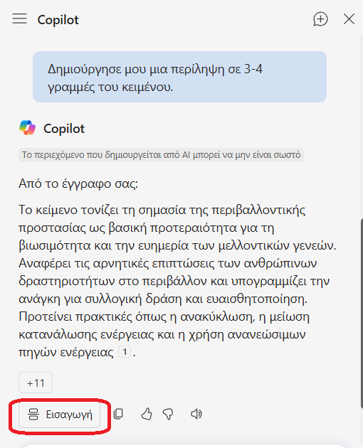
Υποενότητα 4.1 · Word
Εισαγωγή της περίληψης στο κείμενο
Αν θέλετε να χρησιμοποιήσετε την περίληψη στην αρχή του κειμένου σας, τότε μπορείτε να επιλέξετε τη λέξη «Εισαγωγή».
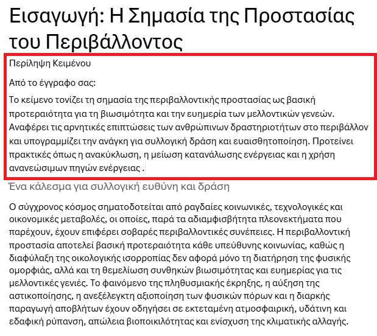
Υποενότητα 4.1 · Word
Προσθήκη παραγράφου — 1ος τρόπος
Ας δούμε και ένα ακόμη prompt. Θέλετε να εισαγάγετε στο κείμενό σας μια ακόμη παράγραφο με επιχειρήματα υπέρ της ανακύκλωσης. Υπάρχουν 2 τρόποι που μπορεί ο Copilot να δημιουργήσει την παράγραφο αλλά και να την εισαγάγει στο Word. Το prompt που θα δημιουργήσει την παράγραφο: «Πρόσθεσε μια παράγραφο με επιχειρήματα υπέρ της ανακύκλωσης.»
1ος Τρόπος: Διαβάζοντας το κείμενο, εντοπίζετε πως λίγο πριν τον επίλογο θέλετε να προσθέσετε μια επιπλέον παράγραφο στην οποία να γίνεται αναφορά στα «επιχειρήματα υπέρ της ανακύκλωσης». Ακριβώς πριν, μπορείτε να δημιουργήσετε ένα κενό, και αριστερά θα εμφανιστεί ένα κουμπί «Πρόχειρο με Copilot».
Πατώντας επάνω σε αυτό, ξεδιπλώνεται και πάλι το μενού με την επιλογή «Τι θέλετε να συντάξει ο Copilot». Εκεί πληκτρολογήστε το ερώτημά σας ή την πρόταση που του λέει τι να κάνει για εσάς.
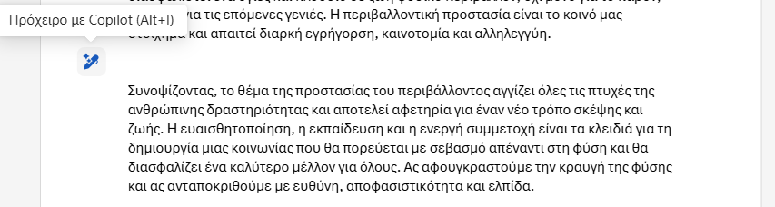
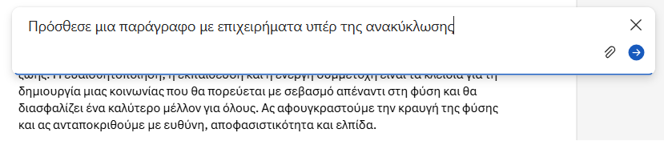
Αφού δημιουργήσει την παράγραφο που του ζητήθηκε, έπειτα επιλέγοντας τη «Διατήρηση», καταγράφει τη νέα προσθήκη στο σημείο που θέλετε.
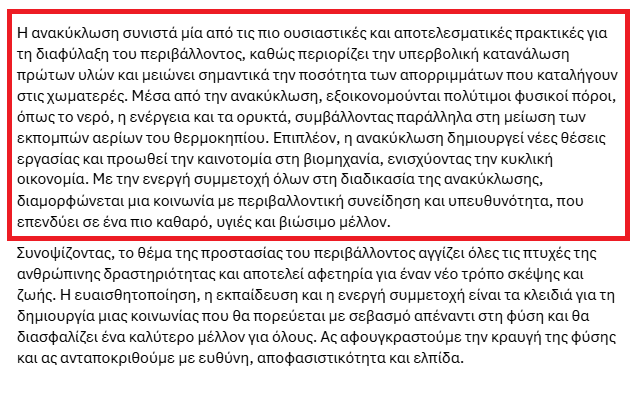
Υποενότητα 4.1 · Word
Προσθήκη παραγράφου — 2ος τρόπος
2ος Τρόπος: Στο πεδίο που έχετε ενεργοποιήσει τον Copilot (πλαϊνό παράθυρο δεξιά), μπορείτε να πείτε στον ψηφιακό βοηθό: «Πρόσθεσε μια παράγραφο με επιχειρήματα υπέρ της ανακύκλωσης.»
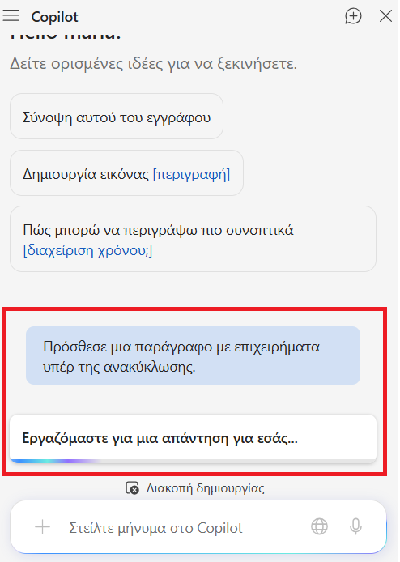
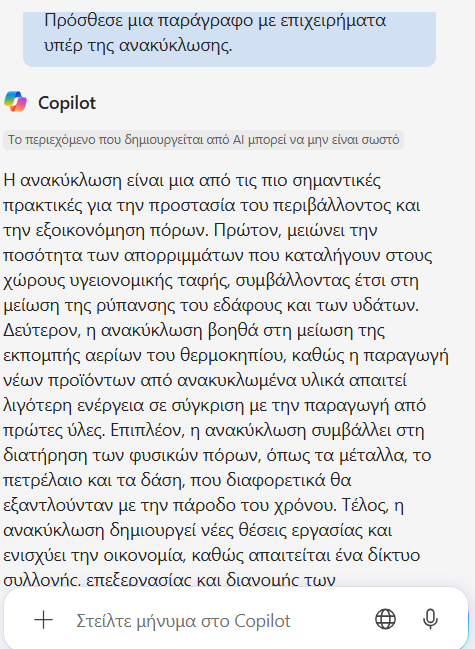
Εάν το κείμενο είναι όπως το θέλετε, κάνετε «Εισαγωγή» στο βασικό σας κείμενο.
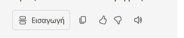
🔑
Συμπέρασμα: Ο Copilot μπορεί να γίνει πραγματικός βοηθός σας μέσα στο Word. Σας βοηθάει να ξεκινήσετε από το μηδέν, να βελτιώσετε αυτό που έχετε γράψει και να προσθέσετε περιεχόμενο χωρίς κόπο. Η δύναμή του βρίσκεται στη συνεργασία με το κείμενό σας: εσείς δίνετε την κατεύθυνση και εκείνος αναλαμβάνει τα υπόλοιπα.
Υποενότητα 4.2 · Excel
Δημιουργία και επεξεργασία Excel
Επιλέξτε να δημιουργήσετε ένα νέο «βιβλίο εργασίας».
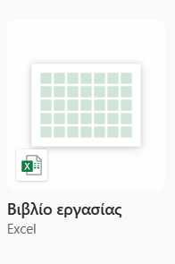
Το Microsoft Copilot μπορεί να σας βοηθήσει να δημιουργήσετε ή να επεξεργαστείτε ένα υπολογιστικό φύλλο Excel, χωρίς να χρειάζεται να γνωρίζετε πολύπλοκες συναρτήσεις ή προχωρημένα εργαλεία. Μπορείτε να του δώσετε οδηγίες όπως:
«Δημιούργησε έναν πίνακα με τις πωλήσεις του μήνα ανά προϊόν»
«Φτιάξε ένα γράφημα που να δείχνει τη μεταβολή των εξόδων κάθε εβδομάδα»
«Υπολόγισε το σύνολο και τον μέσο όρο στη στήλη Γ»
Το Copilot θα αναλύσει τα δεδομένα σας (αν υπάρχουν ήδη στο φύλλο) ή θα σας ζητήσει να του δώσετε τα απαραίτητα στοιχεία για να τα προσθέσει μόνο του.
Υποενότητα 4.2 · Excel
Πιο εξειδικευμένες εργασίες
Μπορεί επίσης να σας βοηθήσει με πιο εξειδικευμένες εργασίες όπως:
Δημιουργία αυτόματων φίλτρων
Ταξινόμηση δεδομένων
Εύρεση αποκλίσεων ή τάσεων μέσα από τα δεδομένα
Εισαγωγή συναρτήσεων όπως =SUM(), =AVERAGE(), =IF() με βάση το τι του ζητάτε
📊
Με τον Copilot, η χρήση του Excel γίνεται πιο εύκολη και γρήγορη — αρκεί να ξέρετε τι θέλετε να πετύχετε και να το εκφράσετε με σαφήνεια. Ας το δούμε με ένα παράδειγμα, βήμα προς βήμα.
Υποενότητα 4.2 · Excel
Βήμα 1: Δημιουργία πίνακα με πωλήσεις προϊόντων
✔ Prompt
«Δημιούργησε έναν πίνακα με τα εξής προϊόντα: Ψωμί, Γάλα, Τυρί και Καφές, και πρόσθεσε τις πωλήσεις τους για τις 4 πρώτες εβδομάδες του Ιουλίου.»
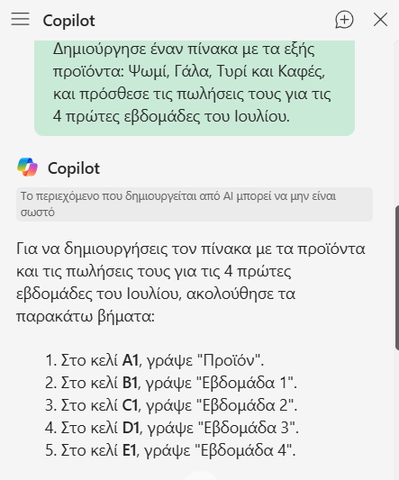
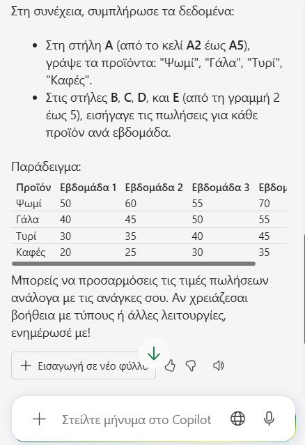
Αυτά τα 2 στιγμιότυπα είναι αυτό που δημιούργησε ο Copilot δίνοντάς του το prompt βήμα προς βήμα. Το ερώτημα ήταν ξεκάθαρο και με ακρίβεια. Έτσι, ο ψηφιακός βοηθός ξεκίνησε να δημιουργεί πρώτα 5 κελιά από το A1 έως το E1 και στη συνέχεια δημιούργησε 4 στήλες, όσες και οι εβδομάδες που του ζητήθηκαν. Έπειτα, καταχώρησε κάποιους τυχαίους αριθμούς, αφού δεν του είχαν δοθεί από το prompt. Τέλος, αφού έφτιαξε τον πίνακα στο περιβάλλον του, έγινε εισαγωγή στο κενό αρχείο του Excel.
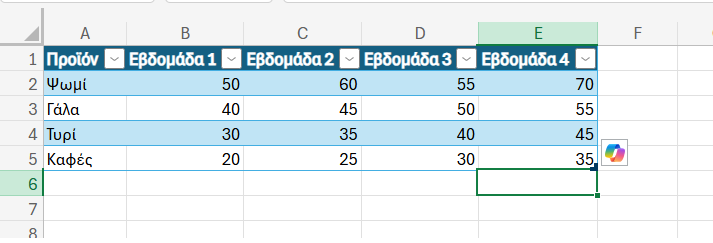
Υποενότητα 4.2 · Excel
Βήμα 2: Υπολογισμός συνολικών πωλήσεων
✔ Prompt
«Πρόσθεσε μια στήλη με το σύνολο των πωλήσεων κάθε προϊόντος για τον Ιούλιο.»
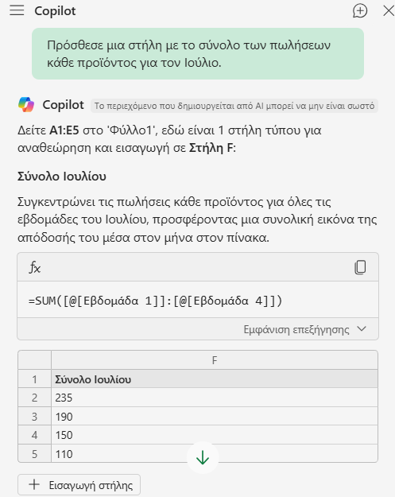
Ο Copilot, ακολουθώντας την οδηγία που έλαβε, δημιούργησε μια στήλη με το όνομα «Σύνολο Ιουλίου» και υπολόγισε το σύνολο για κάθε προϊόν. Αφού δείτε πως το αποτέλεσμα που σας έδωσε είναι σωστό, τότε μπορείτε να το εισαγάγετε στο αρχείο σας.
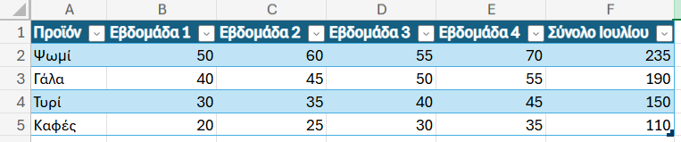
⚠️
Προσοχή! Πάντα θα πρέπει να ελέγχετε τα αποτελέσματα που σας δίνει ο Copilot. Το ίδιο ισχύει για όλα τα μοντέλα τεχνητής νοημοσύνης.
«Πρόσθεσε μια στήλη που να δείχνει τον μέσο όρο πωλήσεων ανά εβδομάδα για κάθε προϊόν.»
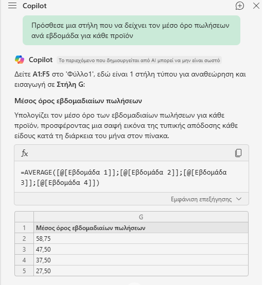
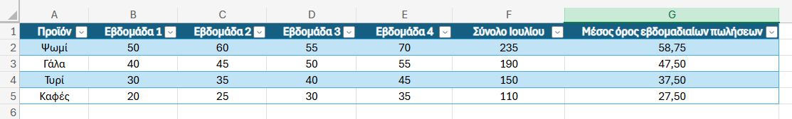
ℹ️
Σημείωση! Κατά τη διάρκεια της επεξεργασίας, θα δείτε στη φάση της «Δημιουργίας» ο πίνακας στο αρχείο του Excel να παίρνει ένα χρώμα κόκκινο. Αυτό σημαίνει πως ο Copilot εκείνη τη στιγμή συλλέγει όλα τα στοιχεία του πίνακα, ώστε να μπορέσει να τον διαβάσει και να κάνει τους ανάλογους υπολογισμούς (ακόλουθη εικόνα).
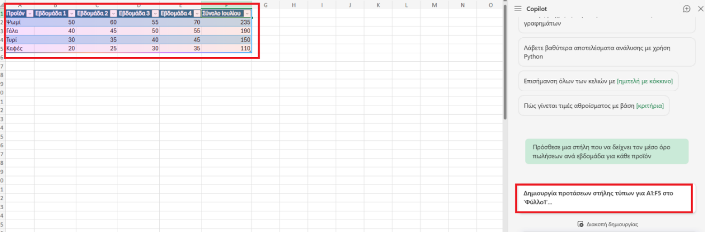
Υποενότητα 4.2 · Excel
Βήμα 4: Δημιουργία γραφήματος
✔ Prompt
«Φτιάξε ένα γράφημα που να δείχνει τις συνολικές πωλήσεις κάθε προϊόντος.»
Αν το διάγραμμα που δημιούργησε είναι σωστό, μπορείτε να το εισαγάγετε στο Excel πατώντας το κουμπί κάτω από το διάγραμμα που λέει «Προσθήκη σε νέο φύλλο».
Υποενότητα 4.2 · Excel
Βήμα 5: Ποσοστό συμμετοχής κάθε προϊόντος
✔ Prompt
«Υπολόγισε το ποσοστό συμμετοχής κάθε προϊόντος στο σύνολο των πωλήσεων του Ιουλίου.»
Υποενότητα 4.2 · Excel
Βήμα 6: Δημιουργία γραφήματος πίτας
✔ Prompt
«Φτιάξε ένα γράφημα πίτας που να δείχνει το ποσοστό συμμετοχής κάθε προϊόντος στις συνολικές πωλήσεις του Ιουλίου.»
Ο Copilot μπορεί να δημιουργήσει όποιο γράφημα θέλετε. Το γράφημα πίτας θα δείξει καθαρά πόσο «μερίδιο» έχει κάθε προϊόν στις πωλήσεις. Είναι ιδανικό για οπτική σύγκριση και παρουσιάσεις.
ℹ️
Σημείωση! Αν ο Copilot κατά την εκτέλεση ενός prompt δεν μπορέσει να απαντήσει, ενώ γνωρίζετε πως μπορεί να απαντήσει αυτό που τον ρωτήσατε, τότε κλείστε το αρχείο και ανοίξτε το και πάλι. Είναι πιθανόν να έχει κολλήσει.
Υποενότητα 4.2 · Excel
Βήμα 7: Προσθήκη φίλτρων στον πίνακα
✔ Prompt
«Πρόσθεσε φίλτρα στον πίνακα για να μπορώ να ταξινομώ ή να φιλτράρω τα προϊόντα και τις πωλήσεις τους.»
Υποενότητα 4.2 · Excel
Βήματα 8 & 9: Ερωτήσεις στα δεδομένα
Βήμα 8: Ποιο προϊόν είχε τη μεγαλύτερη αύξηση πωλήσεων μέσα στον μήνα;
✔ Prompt
«Ποιο προϊόν είχε τη μεγαλύτερη αύξηση πωλήσεων μέσα στον μήνα;»
Βήμα 9: Ποια εβδομάδα είχε τις περισσότερες συνολικές πωλήσεις;
✔ Prompt
«Πρόσθεσε μια γραμμή στο τέλος του πίνακα με το άθροισμα των πωλήσεων για κάθε εβδομάδα και πες μου ποια εβδομάδα είχε τις περισσότερες πωλήσεις.»
Όπως είδατε, με τη βοήθεια του Copilot μπορείτε να δουλεύετε στο Excel με έναν τελείως νέο τρόπο. Δεν χρειάζεται να θυμάστε πολύπλοκες συναρτήσεις ούτε να χάνετε χρόνο ψάχνοντας πώς να φτιάξετε έναν πίνακα ή ένα γράφημα. Αρκεί να του δώσετε ένα καθαρό και σαφές prompt και εκείνος αναλαμβάνει τα υπόλοιπα. Μπορεί να δημιουργήσει πίνακες, να κάνει υπολογισμούς, να βρει τάσεις, να σας βοηθήσει με ταξινομήσεις και φίλτρα, ακόμα και να σας φτιάξει εντυπωσιακά γραφήματα. Με λίγη εξάσκηση, θα δείτε ότι μπορείτε να αξιοποιήσετε το Excel πολύ πιο αποτελεσματικά και να επικεντρωθείτε στην ανάλυση και την απόφαση, αφήνοντας τα τεχνικά στον ψηφιακό σας βοηθό.
ΑΝΑΛΥΤΙΚΗ ΥΠΟΕΝΟΤΗΤΑΕξήγηση · Παράδειγμα · Εφαρμογή
Excel: Copilot, Python και επαλήθευση αποτελεσμάτων
Μαθησιακός στόχος: Να ελέγχετε το φύλλο εργασίας μετά από αυτοματοποιημένη ανάλυση.
4 βήματα μελέτης · προσπάθησε πριν δεις την ανατροφοδότηση
Οι σημειώσεις έκδοσης της 25/08/2026 περιγράφουν χρήση Python μέσω του Edit with Copilot στο Excel για ανάλυση, μετασχηματισμό δεδομένων και οπτικοποιήσεις. Η λειτουργία υπόκειται στους διαθέσιμους ελέγχους εκτέλεσης και στη διάθεση του οργανισμού. Δεν απαιτείται για να ολοκληρωθεί η παρακάτω απλή άσκηση.
Κατεβάστε το συνθετικό CSV και ανοίξτε το στο Excel. Ελέγξτε ότι οι αριθμοί εισάγονται ως αριθμοί και ότι το ελληνικό κείμενο εμφανίζεται σωστά. Κρατήστε αντίγραφο των αρχικών δεδομένων πριν ζητήσετε μετασχηματισμούς.
Δοκιμάστε αυτό το prompt
Υπολόγισε ποσοστό ολοκλήρωσης ανά μήνα από τις στήλες Εγγραφές και Ολοκληρώσεις. Διατήρησε τα αρχικά δεδομένα. Δείξε τον τύπο υπολογισμού, πρόσθεσε συνολικό ποσοστό και γράφημα. Μη συμπεράνεις αιτία από απλή συσχέτιση.
Μικρή άσκηση
Τι ελέγχουμε αν ο πίνακας προσθέτει ποσοστά και εμφανίζει σύνολο 215%;
Δείτε ενδεικτική απάντηση και εξήγηση
Το άθροισμα μηνιαίων ποσοστών δεν είναι συνολικό ποσοστό ολοκλήρωσης. Υπολογίζουμε 214 / 300 = 71,33%. Ελέγχουμε επίσης ότι οι παρονομαστές και η περίοδος είναι σωστοί.
Η ανάλυση αρχίζει από τον ορισμό κάθε γραμμής και στήλης
Πριν ζητήσουμε τύπους ή γραφήματα, πρέπει να γνωρίζουμε τι αντιπροσωπεύουν τα δεδομένα. Κάθε γραμμή μπορεί να είναι άτομο, συναλλαγή ή μηνιαία ομάδα και κάθε στήλη πρέπει να έχει σαφή μονάδα. Αν η ίδια εγγραφή εμφανίζεται δύο φορές ή αν διαφορετικές γραμμές αφορούν επικαλυπτόμενους πληθυσμούς, ένα άθροισμα μπορεί να διπλομετρά. Η τεχνική ορθότητα του τύπου δεν διορθώνει έναν λανθασμένο ορισμό του πίνακα.
Οι τύποι πρέπει να συνδέονται με το ερώτημα. Το άθροισμα απαντά πόσα καταγράφηκαν συνολικά, ο μέσος όρος περιγράφει μέση τιμή ανά παρατήρηση και το ποσοστό συνδέει μέρος και σύνολο. Τα τρία μεγέθη έχουν διαφορετικές μονάδες. Αν ονομάσουμε «ποσοστό» έναν απλό μέσο αριθμό, το αποτέλεσμα γίνεται παραπλανητικό ακόμη και όταν ο υπολογισμός εκτελείται χωρίς τεχνικό σφάλμα.
Οι δυνατότητες Copilot και Python μπορούν να υποστηρίζουν πιο σύνθετη επεξεργασία, όπου διατίθενται. Η επαλήθευση όμως παραμένει αναγκαία: ελέγχουμε την αρχική περιοχή, τυχόν φίλτρα, τη διαχείριση κενών και τη μορφή εξόδου. Κρατάμε απλό χειροκίνητο υπολογισμό για μικρό δείγμα και συγκρίνουμε. Όταν το αποτέλεσμα αλλάζει μετά από φίλτρο, δηλώνουμε ποιος πληθυσμός χρησιμοποιείται ως βάση.
Παράδειγμα: μέσος όρος και συνολικό ποσοστό
Υποθετικό εκπαιδευτικό σενάριο
Στο συνθετικό CSV υπάρχουν 214 ολοκληρώσεις σε τρεις μήνες και 300 εγγραφές. Ο μέσος αριθμός ολοκληρώσεων είναι 214/3 = 71,33 ανά μήνα. Το συνολικό ποσοστό είναι 214/300 × 100 = 71,33%. Οι αριθμητικές τιμές συμπίπτουν στο συγκεκριμένο παράδειγμα, αλλά οι μονάδες και η σημασία τους διαφέρουν.
Η σύμπτωση είναι χρήσιμη για να φανεί γιατί δεν αρκεί να ελέγχουμε μόνο έναν αριθμό. Στην αναφορά προσθέτουμε πάντα τίτλο δείκτη, μονάδα και παρονομαστή. Αν αλλάξουν οι εγγραφές, το ποσοστό μεταβάλλεται ενώ ο μέσος αριθμός ολοκληρώσεων μπορεί να παραμείνει ίδιος.
Ενδεικτική οδηγία
Υπολόγισε σύνολο, μέσο αριθμό ολοκληρώσεων ανά μήνα και συνολικό ποσοστό. Για κάθε αποτέλεσμα γράψε τον τύπο και τη μονάδα. Έλεγξε το σύνολο με ανεξάρτητο απλό υπολογισμό.
Εργαστήριο εφαρμογής
Άλλαξε τις εγγραφές ή τις ολοκληρώσεις και παρατήρησε πώς μεταβάλλεται το συνολικό ποσοστό σε σχέση με τον απλό μέσο μηνιαίων ποσοστών.
Συνθετικά δεδομένα. Κάθε μήνας θεωρείται διαφορετική ομάδα. Οι τιμές παραμένουν μόνο στον browser.
Μήνας
Εγγραφές
Ολοκληρώσεις
Ιούνιος
Ιούλιος
Αύγουστος
Συνολικό ποσοστό
Απλός μέσος ποσοστών
Μεταφορά στη δική σου πράξη
Εξήγησε με δικά σου λόγια γιατί δύο αριθμητικά ίσες τιμές μπορεί να περιγράφουν διαφορετικά μεγέθη.
Οι σημειώσεις παραμένουν σε αυτόν τον browser.
Κριτήρια αυτοαξιολόγησης
Έλεγξε αν η απάντησή σου συνδέεται με τη συγκεκριμένη έννοια, περιλαμβάνει ένα εφαρμόσιμο παράδειγμα και εξηγεί πώς θα ελέγξεις το αποτέλεσμα. Σύγκρινέ την με την αναλυτική εξήγηση και συζήτησε τυχόν αμφιβολία με τον εκπαιδευτή.
Υποενότητα 4.3 · PowerPoint
Δημιουργία και επεξεργασία PowerPoint
Το Microsoft Copilot μπορεί να γίνει πολύτιμος βοηθός όταν δημιουργείτε παρουσιάσεις. Αντί να ξεκινάτε από το μηδέν, μπορείτε να του δώσετε μια γενική ιδέα και εκείνος να δημιουργήσει τις πρώτες διαφάνειες για εσάς, να προτείνει τίτλους, περιεχόμενο, ακόμα και τη διάταξη κάθε διαφάνειας.
Ο Copilot δημιουργεί μια παρουσίαση που περιλαμβάνει:
Τίτλο παρουσίασης
Εισαγωγική διαφάνεια
Διαφάνειες με βασικά σημεία
Συμπερασματική διαφάνεια
Μπορείτε να πατήσετε «Εισαγωγή» για να την προσθέσετε απευθείας στο αρχείο σας ή να επιλέξετε μόνο όσα κομμάτια θέλετε.
Υποενότητα 4.3 · PowerPoint
Βήμα 1: Δημιουργία παρουσίασης από τίτλο
✔ Prompt
«Δημιούργησε μια παρουσίαση με τίτλο «Κλιματική Αλλαγή» που να περιλαμβάνει 5 διαφάνειες.»
Αφού προσθέσετε το ερώτημά σας, στη συνέχεια ο Copilot θα σας εμφανίσει τον τίτλο της διαφάνειας και τις 5 διαφάνειες που ζητήσατε, με τα σχετικά θέματα που θα περιέχει η κάθε διαφάνεια.
Αν θέλετε να περιέχεται στις διαφάνειες συγκεκριμένο υλικό, τότε μπορείτε να το ορίσετε μέσα από το prompt που δώσατε. Όσο πιο περιγραφικό και σαφές είναι το prompt, τόσο πιο ακριβές θα είναι αυτό που θα σας προτείνει. Ωστόσο, και στη συνέχεια μπορείτε να επεξεργαστείτε την κάθε διαφάνεια, ώστε να την προσαρμόσετε στο θέμα που θέλετε να δημιουργήσετε.
Υποενότητα 4.3 · PowerPoint
Οι διαφάνειες που δημιούργησε ο Copilot
Παρακάτω παρουσιάζονται οι διαφάνειες όπως τις έχει επιλέξει ο Copilot.
Επιλέγετε το κουμπί «Διατήρηση» και στη συνέχεια κάντε διπλό κλικ στην 1η διαφάνεια.
Υποενότητα 4.3 · PowerPoint
Προτάσεις σχεδίασης
Επιλέξτε μια διαφάνεια της οποίας θέλετε να αλλάξετε τον σχεδιασμό. Κάνοντας δεξί κλικ του ποντικιού, εμφανίζεται το παρακάτω μενού.
Επιλέγοντας «Προτάσεις σχεδίασης», εμφανίζεται δεξιά μια στήλη με διάφορες προτάσεις σχεδίασης. Μπορείτε να αλλάξετε στυλ στην εκάστοτε διαφάνεια, επιλέγοντας κάποια από τις προτάσεις που σας παραθέτει ο Copilot.
Υποενότητα 4.3 · PowerPoint
Αναδιατύπωση τίτλου ή υπότιτλου
Επιλέξτε τον τίτλο, τον υπότιτλο ή και κάποιο κείμενο της διαφάνειας. Έπειτα θα εμφανιστεί το κουμπί του Copilot. Κάντε κλικ επάνω και θα σας εμφανίσει το μενού, όπως στην εικόνα.
Τώρα μπορείτε να επιλέξετε να κάνει το κείμενο «Επαγγελματικό». Ο Copilot θα αλλάξει το κείμενο. Αν θέλετε να το κρατήσετε, πατήστε «Διατήρηση», διαφορετικά επιλέξτε το διπλανό εικονίδιο για να σας δημιουργήσει άλλο κείμενο — ή, αν θέλετε να κρατήσετε το αρχικό κείμενο, τότε πατήστε το τρίτο κουμπί, που κάνει αναίρεση.
Υποενότητα 4.3 · PowerPoint
Βήμα 2: Προσθήκη περιεχομένου σε υπάρχουσα παρουσίαση
✔ Prompt
«Πρόσθεσε μια διαφάνεια με τίτλο «Ο ρόλος του καθενός μας στην προστασία του κλίματος» και γράψε 3 πρακτικούς τρόπους που μπορεί να βοηθήσει ο καθένας μας.»
Υποενότητα 4.3 · PowerPoint
Βήμα 3: Αναδιατύπωση ή βελτίωση κειμένου
✔ Prompt
«Βελτίωσε το κείμενο αυτής της διαφάνειας ώστε να είναι πιο κατανοητό για μαθητές Γυμνασίου.»
Πολύ χρήσιμο όταν έχετε γράψει ήδη κάτι και θέλετε να το κάνετε πιο απλό, πιο φιλικό ή πιο επαγγελματικό, ανάλογα με το κοινό σας.
Στο περιβάλλον του PowerPoint μπορείτε να επεξεργαστείτε κάθε στοιχείο, όπως κάνετε και στο απλό PowerPoint. Τώρα, αφού δημιούργησε το κείμενο με πιο κατανοητό τρόπο για παιδιά Γ΄ Γυμνασίου, μπορείτε να κάνετε «Αντιγραφή-Επικόλληση» το κείμενο μέσα στη διαφάνεια.
Υποενότητα 4.3 · PowerPoint
Βήμα 4: Δημιουργία λίστας bullets ή πίνακα
✔ Prompt
«Φτιάξε μια διαφάνεια με 3 πλεονεκτήματα και 3 μειονεκτήματα της ανανεώσιμης ενέργειας.»
Υποενότητα 4.3 · PowerPoint
Βήμα 5: Δημιουργία πρόχειρης αφήγησης
✔ Prompt
«Πρόσθεσε σημειώσεις για τον ομιλητή που να εξηγούν τα βασικά σημεία αυτής της διαφάνειας.»
Στο κάτω μέρος από την κεντρική διαφάνεια, ο Copilot θα δημιουργήσει σημειώσεις για τον ομιλητή, όπως φαίνεται στην εικόνα παρακάτω.
Υποενότητα 4.3 · PowerPoint
Βήμα 6: Περίληψη παρουσίασης
✔ Prompt
«Δημιούργησε μια σύντομη περίληψη της παρουσίασης για να την προσθέσω στην τελευταία διαφάνεια ως επίλογο.»
Ο Copilot διαβάζει όλες τις διαφάνειες και δημιουργεί μια συνοπτική σύνοψη με τα βασικά σημεία. Μπορεί να τη βάλει αυτόματα στην τελευταία διαφάνεια ή να σας την προτείνει σε μορφή bullet ή παραγράφου.
Όπως είδατε, ο Copilot μπορεί να σας βοηθήσει να δημιουργήσετε μια ολόκληρη παρουσίαση πιο γρήγορα και πιο εύκολα από ποτέ. Δεν χρειάζεται να ξεκινάτε από το μηδέν ή να αγχώνεστε για το περιεχόμενο κάθε διαφάνειας. Αρκεί να του δώσετε έναν τίτλο ή ένα θέμα, και εκείνος μπορεί να χτίσει για εσάς δομή, κείμενο, bullets, ακόμη και σημειώσεις για τον ομιλητή. Επιπλέον, μπορεί να προσθέσει ή να αναδιατυπώσει περιεχόμενο, να προτείνει τίτλους ή να σας δώσει περίληψη για το τέλος. Με λίγα λόγια, είναι σαν να έχετε έναν συνεργάτη δίπλα σας την ώρα που φτιάχνετε την παρουσίασή σας — έναν συνεργάτη που δεν κουράζεται ποτέ και καταλαβαίνει τι θέλετε, αρκεί να του το πείτε με καθαρό και σαφή τρόπο.
ΑΝΑΛΥΤΙΚΗ ΥΠΟΕΝΟΤΗΤΑΕξήγηση · Παράδειγμα · Εφαρμογή
PowerPoint: τεκμηριωμένες και προσβάσιμες διαφάνειες
Μαθησιακός στόχος: Να αξιολογείτε την παρουσίαση ως εκπαιδευτικό παραδοτέο.
4 βήματα μελέτης · προσπάθησε πριν δεις την ανατροφοδότηση
Η αυτόματη δημιουργία διαφανειών επιταχύνει το πρώτο προσχέδιο. Ο εκπαιδευτικός έλεγχος εξετάζει αν η ιστορία βγάζει νόημα, αν κάθε διαφάνεια έχει σαφή λειτουργία και αν το κοινό μπορεί να διαβάσει τα στοιχεία. Αυτή η δραστηριότητα επεκτείνει τη χρήση του PowerPoint που έχει ήδη διδαχθεί.
Δοκιμάστε αυτό το prompt
Με βάση το εγκεκριμένο ενημερωτικό, ετοίμασε προσχέδιο έξι διαφανειών. Για καθεμία δώσε ένα βασικό μήνυμα, σύντομο κείμενο και προτεινόμενο οπτικό στοιχείο. Βάλε τις πηγές κοντά στους ισχυρισμούς. Μην προσθέσεις αριθμούς που δεν υπάρχουν στο αρχείο. Στις σημειώσεις ομιλητή πρόσθεσε μία ερώτηση προς το κοινό.
Ελέγχουμε μονάδες, άξονες και ποσοστά σε κάθε γράφημα.
Εξασφαλίζουμε επαρκές μέγεθος γραμμάτων και αντίθεση.
Προσθέτουμε εναλλακτικό κείμενο και δεν χρησιμοποιούμε μόνο χρώμα για διάκριση.
Δηλώνουμε ποια εικόνα είναι συνθετική και ελέγχουμε την τελική εξαγωγή.
Μικρή άσκηση
Μια εντυπωσιακή εικόνα δεν σχετίζεται με το μαθησιακό μήνυμα. Την κρατάμε;
Δείτε ενδεικτική απάντηση και εξήγηση
Την αντικαθιστούμε ή την αφαιρούμε. Το οπτικό στοιχείο πρέπει να βοηθά στην κατανόηση, στη σύγκριση ή στην ανάκληση του περιεχομένου.
Εκπαιδευτική ροή, αναγνωσιμότητα και τεκμηριωμένο μήνυμα
Μια παρουσίαση δεν είναι αναφορά χωρισμένη μηχανικά σε οθόνες. Το περιεχόμενο επιλέγεται με βάση τον χρόνο, το κοινό και τον μαθησιακό στόχο. Κάθε διαφάνεια πρέπει να έχει αναγνωρίσιμη λειτουργία: εισαγωγή, εξήγηση, παράδειγμα, ερώτηση ή συμπέρασμα. Η διαδοχή αυτών των λειτουργιών βοηθά το κοινό να καταλάβει πού βρίσκεται και γιατί παρουσιάζεται η επόμενη πληροφορία.
Η οπτική μορφή πρέπει να αποδίδει τη σχέση που θέλουμε να εξηγήσουμε. Μια σύγκριση χρειάζεται κοινές διαστάσεις, μια διαδικασία καθαρή σειρά σταδίων και ένα αριθμητικό εύρημα κατάλληλο γράφημα. Δεν μετατρέπουμε κάθε παράγραφο σε εικόνα ούτε κάθε διαφορά σε πολύχρωμο διάγραμμα. Η λειτουργική απλότητα διευκολύνει την κατανόηση όταν κάθε στοιχείο έχει συγκεκριμένο ρόλο.
Η αναγνωσιμότητα αφορά μέγεθος, αντίθεση, έκταση και οργάνωση. Οι λεπτομέρειες που χρειάζονται για αυτοτελή μελέτη μπορούν να οργανωθούν σε σαφείς υποενότητες ή συμπληρωματικές εξηγήσεις. Οι πηγές παραμένουν διακριτές και προσβάσιμες. Η τελική επιθεώρηση πρέπει να γίνει στη μορφή με την οποία θα χρησιμοποιηθεί το υλικό, ώστε να εντοπιστούν κομμένα κείμενα, ασαφή γραφήματα και στοιχεία που καλύπτουν άλλο περιεχόμενο.
Παράδειγμα: ένα γράφημα και μια σύντομη δραστηριότητα
Υποθετικό εκπαιδευτικό σενάριο
Μια διαφάνεια δείχνει περισσότερες ολοκληρώσεις τον Αύγουστο αλλά ίδιο ποσοστό με τον Ιούλιο. Ο τίτλος δηλώνει αυτή την παρατήρηση χωρίς να μιλά για αποδεδειγμένη επιτυχία της μεθόδου. Πριν δοθεί εξήγηση, ο εκπαιδευτής ζητά από το κοινό να επιλέξει ποιος δείκτης απαντά στην ερώτηση «πόσοι ολοκλήρωσαν;».
Η απάντηση ακολουθεί μετά την προσπάθεια και εξηγεί τη διάκριση πλήθους και ποσοστού. Η δραστηριότητα δεν προστίθεται για εντυπωσιασμό: συνδέεται με την παρανόηση που μπορεί να προκαλέσει το συγκεκριμένο γράφημα.
Ενδεικτική οδηγία
Από το εγκεκριμένο κείμενο σχεδίασε σύντομη παρουσίαση με σαφή λειτουργία ανά διαφάνεια. Διατήρησε πηγές και περιορισμούς. Πρόσθεσε ερώτηση εφαρμογής με λύση που εμφανίζεται μετά την προσπάθεια.
Εργαστήριο εφαρμογής
Ποια οπτική μορφή βοηθά περισσότερο στη σύγκριση δύο εναλλακτικών;
Μεταφορά στη δική σου πράξη
Πάρε μια πυκνή διαφάνεια του αντικειμένου σου και περιέγραψε πώς θα χώριζες την εξήγηση, το παράδειγμα και την εφαρμογή.
Οι σημειώσεις παραμένουν σε αυτόν τον browser.
Κριτήρια αυτοαξιολόγησης
Έλεγξε αν η απάντησή σου συνδέεται με τη συγκεκριμένη έννοια, περιλαμβάνει ένα εφαρμόσιμο παράδειγμα και εξηγεί πώς θα ελέγξεις το αποτέλεσμα. Σύγκρινέ την με την αναλυτική εξήγηση και συζήτησε τυχόν αμφιβολία με τον εκπαιδευτή.
Συνέχεια · Συνεργασία εργαλείων
Πώς συνεργάζονται μεταξύ τους το NotebookLM, το Gemini, το ChatGPT και το Copilot
Κάθε εργαλείο έχει διαφορετικό ρόλο και μπορείτε να το χρησιμοποιήσετε σε διαφορετικό στάδιο της εργασίας σας. Όταν τα συνδυάζετε σωστά, μπορείτε να οργανώσετε το υλικό σας, να γράψετε το κείμενό σας και να δημιουργήσετε την τελική μορφή ενός εγγράφου με πολύ λιγότερο χρόνο και κόπο. Ακολουθεί ένα απλό μοντέλο συνεργασίας που μπορείτε να εφαρμόσετε σε οποιαδήποτε εργασία.
Συνεργασία εργαλείων · Στάδιο 1
1. NotebookLM – Συγκεντρώνετε, ανεβάζετε και κατανοείτε τις πηγές σας
Ξεκινάτε πάντα από το υλικό που ήδη έχετε. Μπορείτε να ανεβάσετε PDF, σημειώσεις, άρθρα ή Word έγγραφα. Το NotebookLM σάς δίνει άμεσα μια περίληψη, τα βασικά σημεία και τυχόν έννοιες που πρέπει να προσέξετε. Έτσι αποκτάτε μια ξεκάθαρη εικόνα για το θέμα, χωρίς να ψάχνετε σε κάθε αρχείο ξεχωριστά.
📓
Το NotebookLM είναι το «σημειωματάριο» της έρευνας, εφόσον έχετε κάποια αρχεία στην κατοχή σας.
Συνεργασία εργαλείων · Στάδιο 2
2. Gemini – Οργανώνετε πρακτικές λεπτομέρειες και μικρο-εργασίες
Αφού συλλέξετε το υλικό, μπορείτε να χρησιμοποιήσετε το Gemini για τα πιο πρακτικά κομμάτια της δουλειάς σας. Μπορείτε να ζητήσετε περίληψη ενός email, να δημιουργήσετε μια λίστα εργασιών, να οργανώσετε υπενθυμίσεις ή να εντοπίσετε γρήγορα πληροφορίες μέσα από το Google Workspace.
✅
Το Gemini σάς λύνει τα χέρια σε μικρά καθημερινά βήματα, ώστε να μείνετε συγκεντρωμένοι στην κύρια εργασία.
Συνεργασία εργαλείων · Στάδιο 3
3. ChatGPT – Συγγραφή, μετασχηματισμός και βελτίωση του κειμένου
Αφού έχετε τις ιδέες και τις βασικές πληροφορίες, περνάτε στο ChatGPT για να γράψετε το κύριο κείμενο. Μπορείτε να ζητήσετε:
καθαρό και δομημένο κείμενο,
περίληψη,
επεξεργασία ύφους,
bullets, πίνακες ή JSON,
μία ενιαία αναφορά με δομή Εισαγωγή – Ευρήματα – Προτάσεις.
✍️
Το ChatGPT αναλαμβάνει το «συγγραφικό» στάδιο και σας βοηθά να μετατρέψετε σκέψεις, σημειώσεις και ιδέες σε καθαρό τελικό κείμενο.
Τελική εφαρμογή: συνεργασία εργαλείων με κοινό έλεγχο
Μαθησιακός στόχος: Να σχεδιάζετε ολοκληρωμένη ροή χωρίς περιττές μεταφορές.
4 βήματα μελέτης · προσπάθησε πριν δεις την ανατροφοδότηση
Οι τέσσερις εφαρμογές έχουν επικαλυπτόμενες δυνατότητες. Η προηγούμενη κατανομή ρόλων είναι ένα παράδειγμα, όχι υποχρεωτική σειρά. Επιλέγουμε τα εργαλεία που υπάρχουν στον οργανισμό και περιορίζουμε τις μεταφορές αρχείων όταν δεν προσθέτουν αξία.
Πρωτότυπο εκπαιδευτικό διάγραμμα · 2026. Η εξήγηση αποδίδεται και στο κείμενο.
Εργασία εφαρμογής: δημιουργήστε απολογισμό ενός υποθετικού σεμιναρίου από το συνθετικό CSV και δύο μικρά κείμενα που θα γράψετε εσείς. Παραδώστε πίνακα αποτελεσμάτων, ενημερωτικό 300 λέξεων και τρεις διαφάνειες. Καταγράψτε πού βοήθησε το AI και ποιες διορθώσεις κάνατε.
Κριτήριο
Τεκμήριο επιτυχίας
Ακρίβεια
Οι αριθμοί συμφωνούν με το CSV
Τεκμηρίωση
Κάθε πραγματικό στοιχείο συνδέεται με πηγή
Διαφάνεια
Οι παραδοχές και οι συνθετικές εικόνες δηλώνονται
Χρηστικότητα
Τα αρχεία ανοίγουν και διαβάζονται καθαρά
Μικρή άσκηση
Χρειάζεται υποχρεωτικά να περάσετε το υλικό και από τις τέσσερις εφαρμογές;
Δείτε ενδεικτική απάντηση και εξήγηση
Όχι. Μία ή δύο μπορεί να επαρκούν. Επιλέγουμε τη μικρότερη ροή που δίνει ελέγξιμο αποτέλεσμα, με βάση πρόσβαση, ποιότητα και χρόνο διόρθωσης.
Ολοκλήρωση έργου με κοινά δεδομένα και σαφείς μεταβιβάσεις
Η συνεργασία εργαλείων έχει νόημα όταν εξυπηρετεί την εργασία και μειώνει ουσιαστικά τον χρόνο ή τα σφάλματα. Δεν χρειάζεται κάθε έργο να περάσει από όλες τις εφαρμογές. Επιλέγουμε το μικρότερο κατάλληλο σύνολο εργαλείων με βάση πρόσβαση σε πηγές, μορφή παραδοτέου και δυνατότητα ελέγχου. Περισσότερα στάδια δημιουργούν και περισσότερα σημεία όπου μπορεί να χαθεί πληροφορία ή να αλλάξει μια παραδοχή.
Κάθε μεταβίβαση χρειάζεται σύντομο πλαίσιο: ποια πηγή χρησιμοποιήθηκε, ποια έκδοση είναι τελική, τι υπολογίστηκε και τι παραμένει ανοιχτό. Αν μεταφέρουμε μόνο ένα συμπέρασμα χωρίς τα δεδομένα και τους περιορισμούς του, το επόμενο εργαλείο μπορεί να το αναπτύξει με μεγαλύτερη βεβαιότητα από όση δικαιολογείται. Η διατήρηση προέλευσης και ορισμών είναι προϋπόθεση συνέπειας.
Ο τελικός έλεγχος αφορά το έργο ως σύνολο. Αναφορά, πίνακας και παρουσίαση πρέπει να συμφωνούν στα βασικά στοιχεία και να εξυπηρετούν το ίδιο κοινό. Η ομάδα ελέγχει το άνοιγμα των αρχείων, τις παραπομπές, τους αριθμούς και τα δικαιώματα κοινοποίησης. Η δήλωση ενός βοηθού ότι «ολοκληρώθηκε» δεν αντικαθιστά αυτά τα κριτήρια παραλαβής.
Παράδειγμα: ενημερωτικό εκπαιδευτικού οργανισμού
Υποθετικό εκπαιδευτικό σενάριο
Η ομάδα έχει δύο εγκεκριμένες πηγές και το συνθετικό CSV. Χρειάζεται αναφορά μίας σελίδας, πίνακα με τύπους και σύντομη παρουσίαση. Πρώτα συμφωνεί σε ορισμούς και ερώτημα, έπειτα οργανώνει τα τεκμήρια και παράγει τα παραδοτέα. Οι προτάσεις δράσης δηλώνονται χωριστά από τα ευρήματα.
Πριν από την παράδοση, ένα μέλος ελέγχει τις πηγές, ένα τους υπολογισμούς και ένα τη συνοχή μεταξύ αρχείων. Αν η αναφορά περιέχει αιτιώδη εξήγηση που δεν προκύπτει από τα δεδομένα, η διατύπωση διορθώνεται σε παρατήρηση ή υπόθεση. Το τελικό αποτέλεσμα είναι κοινό, ελέγξιμο έργο.
Ενδεικτική οδηγία
Οργάνωσε τη ροή με πηγές, ανάλυση και τελικά αρχεία. Για κάθε μεταβίβαση διατήρησε ορισμούς, μονάδες και εκκρεμότητες. Στο τέλος έλεγξε ότι αναφορά, πίνακας και παρουσίαση συμφωνούν στα βασικά ευρήματα.
Εργαστήριο εφαρμογής
Οργάνωσε τη συνολική ροή του έργου.
Μετακίνησε τα βήματα με τα κουμπιά ↑ και ↓. Το πρώτο βήμα πρέπει να βρίσκεται επάνω.
Συμφωνώ σε ερώτημα, πηγές και ορισμούς
Ελέγχω τη συνέπεια και παραλαμβάνω τα αρχεία
Μετατρέπω την ανάλυση στις απαιτούμενες μορφές
Ελέγχω δεδομένα και παράγω τεκμηριωμένη ανάλυση
Μεταφορά στη δική σου πράξη
Σχεδίασε μια δική σου ροή με έως τρία εργαλεία και γράψε τι θα παραδίνει κάθε στάδιο στο επόμενο.
Οι σημειώσεις παραμένουν σε αυτόν τον browser.
Κριτήρια αυτοαξιολόγησης
Έλεγξε αν η απάντησή σου συνδέεται με τη συγκεκριμένη έννοια, περιλαμβάνει ένα εφαρμόσιμο παράδειγμα και εξηγεί πώς θα ελέγξεις το αποτέλεσμα. Σύγκρινέ την με την αναλυτική εξήγηση και συζήτησε τυχόν αμφιβολία με τον εκπαιδευτή.
Ανακεφαλαίωση
Ανακεφαλαίωση Ενότητας 4
Ας συνοψίσουμε τα βασικά σημεία της ενότητας:
Ο Microsoft Copilot είναι μοντέλο Τεχνητής Νοημοσύνης της Microsoft, παρόμοιο με το ChatGPT και το Gemini: καταλαβαίνει φυσική γλώσσα, απαντά σε ερωτήσεις, προτείνει ιδέες και βοηθά σε εργασίες.
Υπάρχουν δύο βασικά είδη: ο Copilot στον browser (chatbot, χωρίς εγκατάσταση, στο copilot.microsoft.com) και ο Microsoft Copilot στις εφαρμογές του 365 (συνεργάζεται απευθείας με τα έγγραφα, απαιτεί συνδρομή Microsoft 365).
Το περιβάλλον: σημεία πρόσβασης από τον Edge, πεδίο συνομιλίας, τρόποι απάντησης (Quick response, Think Deeper και — με συνδρομή — Deep Research), πλαϊνό μενού (Discover, Labs, Pages, Conversations), είσοδος με λογαριασμό Microsoft/Apple/Google και ρυθμίσεις χρήστη.
Τα καλά prompts: σκεφτείτε πρώτα τι θέλετε, ξεκινήστε απλά, δοκιμάστε–ζητήστε–διορθώστε, δώστε πλαίσιο και πειραματιστείτε. Σαφήνεια και ακρίβεια: «κάνε αυτό, με αυτόν τον τρόπο, για αυτόν τον λόγο».
Ανακεφαλαίωση
Ανακεφαλαίωση: Word, Excel και PowerPoint
Στο Word, ο Copilot ξεκινά έγγραφα από το μηδέν, διορθώνει, αναδιατυπώνει, δημιουργεί περιλήψεις και προσθέτει παραγράφους — με «Διατήρηση», «δημιουργήστε ξανά» ή νέες οδηγίες.
Στο Excel, δημιουργεί πίνακες, υπολογίζει σύνολα και μέσους όρους, φτιάχνει γραφήματα (στήλες, πίτα), προσθέτει φίλτρα και απαντά σε ερωτήσεις πάνω στα δεδομένα — πάντα ελέγχετε τα αποτελέσματα.
Στο PowerPoint, χτίζει παρουσιάσεις από έναν τίτλο, προτείνει σχεδίαση, αναδιατυπώνει κείμενα, προσθέτει διαφάνειες, σημειώσεις ομιλητή και περίληψη-επίλογο.
Τα τέσσερα εργαλεία συνεργάζονται σε μια ενιαία ροή: NotebookLM (συγκέντρωση και κατανόηση πηγών) → Gemini (οργάνωση μικρο-εργασιών) → ChatGPT (συγγραφή κειμένου) → Copilot (τελική μορφοποίηση σε Word, Excel, PowerPoint).
🚀
Συγχαρητήρια! Ολοκληρώσατε την Ενότητα 4 και μαζί της τη γνωριμία με τα εργαλεία του προγράμματος. Μπορείτε να επιστρέψετε σε οποιαδήποτε διαφάνεια από το πλευρικό μενού για επανάληψη — η πρόοδός σας αποθηκεύεται αυτόματα.
Πηγές
Πηγές & σύνδεσμοι
Οι σύνδεσμοι που αναφέρονται στο εκπαιδευτικό υλικό της ενότητας:
Ο Copilot διαφέρει από έναν δημόσιο βοηθό συνομιλίας σε ένα σημείο που καθορίζει τα πάντα: δουλεύει μέσα στα δεδομένα του οργανισμού σας. Η παρούσα θεματική εξηγεί τι σημαίνει αυτό τεχνικά και ποιες ευθύνες συνεπάγεται.
Μαθησιακοί στόχοι της θεματικής
Να διακρίνετε πού βρίσκονται τα δεδομένα σας και ποιος έχει πρόσβαση σε αυτά.
Να περιγράφετε πώς εντοπίζεται το σχετικό αρχείο μέσα σε χιλιάδες έγγραφα.
Να εξηγείτε γιατί δύο συνάδελφοι μπορούν να πάρουν διαφορετική απάντηση στην ίδια ερώτηση.
Να αναγνωρίζετε τους κινδύνους υπερέκθεσης πληροφορίας και πώς περιορίζονται.
Θεωρία · 2
Πού ζουν τα δεδομένα σας
Η βασική διάκριση που πρέπει να κρατήσετε είναι ανάμεσα στον δημόσιο και στον επιχειρησιακό βοηθό. Το ίδιο εμπορικό όνομα μπορεί να καλύπτει και τα δύο, με πολύ διαφορετικούς όρους.
Ερώτημα
Δημόσιος βοηθός
Επιχειρησιακή έκδοση
Πού πηγαίνει το κείμενό μου;
Σε υποδομή του παρόχου, με τους γενικούς όρους χρήσης.
Εντός των ορίων που ορίζει η σύμβαση του οργανισμού.
Χρησιμοποιείται για εκπαίδευση;
Εξαρτάται από τις ρυθμίσεις του λογαριασμού.
Συνήθως όχι· ορίζεται ρητά στη σύμβαση.
Ποια αρχεία βλέπει;
Μόνο όσα ανεβάζετε εσείς στη συνομιλία.
Όσα έχετε ήδη δικαίωμα να δείτε στον οργανισμό.
Ποιος ελέγχει την πρόσβαση;
Εσείς, ανά συνομιλία.
Ο διαχειριστής, μέσα από τις πολιτικές του οργανισμού.
🔐
Πριν από κάθε επαγγελματική χρήση, βεβαιωθείτε ποια έκδοση χρησιμοποιείτε. Ένα εργασιακό έγγραφο σε δημόσιο βοηθό μπορεί να συνιστά παράβαση της πολιτικής του φορέα σας, ανεξάρτητα από το πόσο χρήσιμη ήταν η απάντηση.
Θεωρία · 3
Ο σημασιολογικός δείκτης
Πώς βρίσκει ο Copilot το σχετικό αρχείο ανάμεσα σε χιλιάδες έγγραφα, μηνύματα και παρουσιάσεις; Δεν διαβάζει τα πάντα σε κάθε ερώτηση. Στηρίζεται σε έναν δείκτη που έχει προετοιμαστεί εκ των προτέρων.
Βήμα
Τι συμβαίνει
1. Ευρετηρίαση
Το περιεχόμενο του οργανισμού τεμαχίζεται και μετατρέπεται σε διανύσματα που αποτυπώνουν το νόημα.
2. Ερώτηση
Η δική σας διατύπωση μετατρέπεται επίσης σε διάνυσμα.
3. Φιλτράρισμα δικαιωμάτων
Από τα υποψήφια αποσπάσματα κρατούνται μόνο όσα έχετε δικαίωμα να δείτε.
4. Σύνθεση
Τα επιτρεπόμενα αποσπάσματα δίνονται στο μοντέλο, το οποίο συντάσσει την απάντηση με αναφορές στα αρχεία.
Το τρίτο βήμα είναι το πιο σημαντικό από πλευράς ασφάλειας: το φιλτράρισμα γίνεται πριν φτάσει οτιδήποτε στο μοντέλο. Ο Copilot δεν «ξέρει» και μετά αποφασίζει να μη σας πει· απλώς δεν του δίνεται το περιεχόμενο στο οποίο δεν έχετε πρόσβαση.
Θεωρία · 4
Γιατί δύο χρήστες παίρνουν άλλη απάντηση
Επειδή η ανάκτηση περιορίζεται από τα δικαιώματα του καθενός, η ίδια ερώτηση δίνει διαφορετικό αποτέλεσμα σε διαφορετικούς ανθρώπους. Δεν πρόκειται για σφάλμα: είναι ο μηχανισμός ασφάλειας σε λειτουργία.
Κατάσταση
Τι σημαίνει
Τι κάνετε
Ελλιπής απάντηση
Δεν έχετε πρόσβαση σε κάποια σχετικά αρχεία.
Ζητάτε πρόσβαση από τον κάτοχο ή αναφέρετε ρητά το κενό.
Απροσδόκητα πλούσια απάντηση
Έχετε πρόσβαση σε περισσότερα από όσα νομίζατε.
Το αναφέρετε: ίσως πρόκειται για λάθος ρύθμιση δικαιωμάτων.
Παλαιά στοιχεία
Ο δείκτης δεν έχει ενημερωθεί ή το αρχείο είναι ξεπερασμένο.
Επιβεβαιώνετε στο ίδιο το αρχείο και ελέγχετε ημερομηνία.
⚠️
Υπερέκθεση πληροφορίας: ο μεγαλύτερος πρακτικός κίνδυνος σε έναν οργανισμό δεν είναι ότι ο βοηθός θα «σπάσει» τα δικαιώματα, αλλά ότι θα φέρει στην επιφάνεια αρχεία με υπερβολικά ανοιχτά δικαιώματα, τα οποία ως τότε ήταν απλώς δυσεύρετα. Η εισαγωγή ενός τέτοιου εργαλείου είναι καλή αφορμή για έλεγχο των δικαιωμάτων πρόσβασης.
Αυτοαξιολόγηση
Ελέγξτε την κατανόησή σας στη θεωρία
Απαντήστε νοερά και μετά ανοίξτε κάθε απάντηση. Οι ερωτήσεις είναι διαμορφωτικές και δεν επηρεάζουν τη βαθμολογία της τελικής αξιολόγησης.
Ερώτηση 1
Συνάδελφός σας παίρνει πληρέστερη απάντηση από εσάς στην ίδια ερώτηση. Τι συμβαίνει;
Δείτε ενδεικτική απάντηση και εξήγηση
Έχει πρόσβαση σε αρχεία στα οποία εσείς δεν έχετε. Η ανάκτηση φιλτράρεται με βάση τα δικαιώματα του κάθε χρήστη πριν φτάσει οτιδήποτε στο μοντέλο. Αν χρειάζεστε τα στοιχεία, ζητάτε πρόσβαση με τον συνηθισμένο τρόπο του οργανισμού.
Ερώτηση 2
Ο βοηθός αναφέρει αριθμό από εσωτερική παρουσίαση. Τον χρησιμοποιείτε απευθείας σε αναφορά;
Δείτε ενδεικτική απάντηση και εξήγηση
Όχι πριν ανοίξετε το αρχείο και επιβεβαιώσετε τον αριθμό, την ημερομηνία και το τι ακριβώς μετρά. Ο δείκτης μπορεί να περιέχει παλαιότερες εκδόσεις, προσχέδια ή στοιχεία που αργότερα αναθεωρήθηκαν.
Ερώτηση 3
Γιατί δεν επικολλάτε εργασιακό έγγραφο σε δημόσιο βοηθό συνομιλίας;
Δείτε ενδεικτική απάντηση και εξήγηση
Επειδή το περιεχόμενο εξέρχεται από τα όρια του οργανισμού και υπάγεται στους γενικούς όρους του παρόχου, όχι στη σύμβαση του φορέα σας. Ανάλογα με το περιεχόμενο, αυτό μπορεί να συνιστά παράβαση της πολιτικής ασφάλειας ή και της νομοθεσίας για τα προσωπικά δεδομένα.
Οι πίνακες και τα σενάρια είναι διδακτικές κατασκευές του μαθήματος. Οι ακριβείς όροι κάθε συνδρομής ορίζονται από τη σύμβαση του οργανισμού σας.
Εργαλείο μαθήματος
Ο βοηθός του μαθήματος
Κάτω δεξιά σε κάθε οθόνη θα βρείτε το κουμπί «Βοηθός μαθήματος». Είναι ένας μικρός συνομιλητής που γνωρίζει το περιεχόμενο αυτής της ενότητας και σας βοηθά να βρείτε γρήγορα ό,τι ψάχνετε, χωρίς να ξεφυλλίζετε διαφάνειες.
💬
Δοκιμάστε τον τώρα. Ρωτήστε τον με δικά σας λόγια, όπως θα ρωτούσατε έναν συνάδελφο. Θα σας απαντήσει και θα σας πάει με ένα κλικ στο σημείο όπου βρίσκεται η απάντηση.
Τι μπορείτε να τον ρωτήσετε
Ορισμούς: «τι είναι ο σημασιολογικός δείκτης;»
Διαδικασίες: «πώς χρησιμοποιώ τον Copilot στο Excel;»
Παραδείγματα: «δείξε μου ένα παράδειγμα στο Word»
Προσανατολισμό: «περιεχόμενα» ή «πού βρίσκομαι;»
Συνέχεια: «πες μου περισσότερα», για να συνεχίσει από εκεί που σταμάτησε
🔒
Ο βοηθός δουλεύει μέσα στον δικό σας υπολογιστή, πάνω στο υλικό του μαθήματος. Δεν στέλνει πουθενά τις ερωτήσεις σας, δεν τις αποθηκεύει και λειτουργεί ακόμη κι όταν δεν έχετε σύνδεση στο διαδίκτυο.
Υπάρχει και μια διδακτική πλευρά. Ο βοηθός εντοπίζει κείμενο που υπάρχει ήδη, αντί να παράγει καινούργιο. Γι’ αυτό δεν μπορεί να σας πει κάτι που δεν γράφεται πουθενά στο μάθημα, αλλά ούτε και να επινοήσει. Η ίδια διάκριση, ανάμεσα στην ανάκτηση και στην παραγωγή, βρίσκεται πίσω από κάθε σύστημα τεχνητής νοημοσύνης που στηρίζεται σε πηγές.